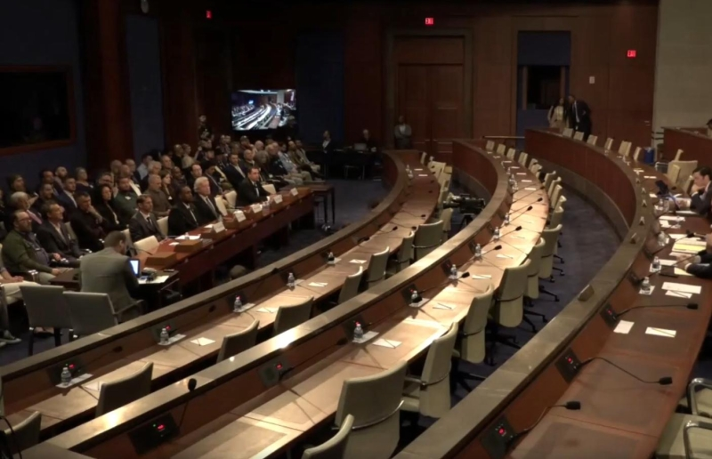

“Restoring Public Trust Through UAP Transparency and Whistleblower Protection.” Congressional Hearing | September 9, 2025 | 10:00 am

Visual Representation
Executive Summary: Congressional Hearing on UAP Transparency and Whistleblower Protection is the strongest choice.
The Congressional hearing focuses on Unidentified Aerial Phenomena (UAPs) and whistleblower protection, with witnesses detailing their experiences with UAP sightings and subsequent retaliation or obstruction from government agencies. The hearing aims to establish transparency and accountability within the executive branch, addressing concerns about secrecy and potential cover-ups. Witnesses highlight a pattern of dismissed whistleblower reports, particularly from military pilots fearing career repercussions.
The testimony reveals significant frustration with existing UAP investigative structures, including the All-Domain Anomaly Resolution Office (AERO), and allegations of intentional obstruction of thorough investigations into UAP activity. The hearing aims to address national security implications, demand transparency from the Department of Defense and intelligence community regarding UAPs, and establish accountability for past inaction or cover-ups.
The conversation underscores Congressional efforts to compel greater transparency and whistleblower protections, with a focus on protecting those who come forward with UAP-related information. Witnesses express concerns about potential systemic issues with governmental transparency and oversight regarding UAP-related programs and protections for those reporting such activity. The hearing highlights the importance of establishing safe channels for federal employees to report UAP-related concerns without fear of reprisal, linking this to broader issues of government accountability and public trust.
Opening Statement on UAP Disclosures and Congressional Oversight
Summary: The speaker emphasizes the importance of transparency regarding unidentified anomalous phenomena (UAPs) for national security and government accountability. They highlight whistleblower testimonies from military pilots, criticize existing oversight bodies like AERO and ICIG, and call for rigorous scientific inquiry into UAPs. The speaker also stresses that adversarial nations are actively studying these phenomena, emphasizing the need to maintain trust with service members and avoid strategic surprises. Institutional Significance: This statement underscores Congress' responsibility in investigating UAPs and ensuring transparency from relevant government agencies. It highlights potential threats posed by foreign-origin UAPs and emphasizes the importance of scientific inquiry into unexplained phenomena for national security purposes.
[0.03s]
Rep. Anna Paulina Luna (Chairwoman)
Secrets will come to an order. Welcome everyone without objection the chair may declare a recess at any time additionally without any objection the following members are waived onto the task force for the purpose of questioning witnesses at today's hearing representative biggs of arizona representative baggage of alaska representative ogles of tennessee representative titus of nevada and representative moskowitz of florida there are no objections i recognize myself for the purpose of making an opening statement Good morning and welcome to the hearing regarding UAP disclosures. For too long, the issue of unidentified anomalous phenomena, commonly known as UAPs, has been shrouded in secrecy, stigma, and in some cases, outright dismissal. Today, I want to state clearly that this is not science fiction or creating speculation. This is about national security, government accountability, and the American people's right to the truth.
üìù
[53.73s]
Rep. Anna Paulina Luna (Chairwoman)
I've spoken now to a number of whistleblowers from the military to include the infamous Eglin Air Force Base incident that occurred when myself and former Representative Matt Gaetz, as well as Representative Burchett, followed up on a lead from multiple active duty Air Force pilot whistleblowers that alleged that the United States Air Force was covering up UAP activity at Eglin Air Force Base. We have heard from a number of whistleblowers, specifically military pilots, that the reason for not coming forward publicly is out of fear that speaking out would cost them their flight status and potentially their careers. This is unacceptable. We cannot protect our air spaces if our best trained observers are silenced. We cannot advance science if we refuse to ask questions. And we cannot maintain trust in government if we keep the American people in the dark. Now Congress has tried to fix this problem. Congress tried to create formal channels through the All Domain Anomaly Resolution Office, also known as AERO, and the Intelligence Community Inspector General for service members and officials to make disclosures.
ℹ
UAP Disclosures
Unidentified Anomalous Phenomena (UAP) are events or objects that cannot be identified by conventional means and have been the subject of government investigations for decades. The term "UFO" is often used interchangeably, but UAP refers specifically to anomalous phenomena in military airspace.
ℹ
AERO
All Domain Anomaly Resolution Office (AERO) is a newly established office within the Department of Defense tasked with investigating and reporting on unidentified aerial phenomena (UAPs). It was created as part of the 2021 National Defense Authorization Act to address concerns about national security risks posed by UAPs.
[111.73s]
Rep. Anna Paulina Luna (Chairwoman)
But the reality, the reports come in are often to brush aside, slow walked or met with skepticism rather than serious investigation. Recently, the former Arrow director known as Sean Kilpatrick attacked our witnesses and members on this committee. It should be noted that he's a documented liar and brings into question what his purpose at Arrow really was if it was not to follow up on investigations and disclose his findings to members of Congress. A former Deputy Assistant Secretary of Defense for Intelligence, Chris Mellon, described a report published by Arrow that found no evidence that any USG investigation, academic-sponsored research, or official review panel has confirmed any citing of UAP-represented extraterrestrial technology. As the most error-ridden and unsatisfactory government report I can recall reading during after decades of government service. Mellon further noted that this was a first-air report submitted to Congress without the Director of National Intelligence's sign-off and seemingly excluded input from any scholars or experts who have studied or written extensively about this topic, as would normally be in any other case in this field.
ℹ
Whistleblower Protection
Military pilots who witness UAP activity may fear speaking out publicly due to potential career consequences such as losing their flight status or facing retaliation from superiors. The establishment of formal channels like AERO aims to provide protection for whistleblowers and encourage them to come forward with information about UAPs without fear of reprisal.
[178.96s]
Rep. Anna Paulina Luna (Chairwoman)
Mellon determined that this report failed to fulfill the congressional mandate under which it was required, omitted entire agencies with known investigations or activities related to UAPs, and omitted any discussion of efforts to hide classified or unclassified information about UAP. Such efforts were unaddressed by the report despite the existence of agency records and investigations concurring with them, including those at U.S. Customs and Border Protection. If we set up offices and oversight bodies only to let them become graveyards for testimony, or worse yet, ruses for pretending to investigate when in actuality there was no follow-up, then we are not doing our jobs. In recent months, Congress has also been presented with evidence that points to technologies that to our knowledge are beyond our current capabilities. It is our duty as elected representatives to follow the facts wherever they lead and to ensure that those facts are not buried under classification stamps or bureaucratic excuses. Let me be clear, whether UAPs represent adversarial technology, natural phenomena, or something beyond current human understanding, Congress has a responsibility to investigate.
ℹ
Arrow Director
Sean Kilpatrick was the director of the All Domain Anomaly Resolution Office (AERO), which is responsible for investigating unidentified aerial phenomena (UAPs) within military airspace. His recent attacks on witnesses and committee members have raised questions about his credibility and motives in this role.
ℹ
Chris Mellon's Report
Chris Mellon, a former Deputy Assistant Secretary of Defense for Intelligence, criticized the AERO report as "error-ridden" and unsatisfactory due to its lack of input from experts on UAPs, exclusion of certain agencies involved in investigations, and failure to address efforts to hide classified or unclassified information about these phenomena.
[244.35s]
Rep. Anna Paulina Luna (Chairwoman)
If these objects are foreign in origin, then they pose a direct threat to our national security. And if they represent something unknown, they demand rigorous scientific inquiry, not ridicule, not secrecy, and not silence. The stakes are very high. Adversarial nations are not waiting for us to catch up. They are studying these phenomena as well aggressively, as multiple nations have also announced their own parliamentary investigations into this very topic. If we are to continue to hide information from ourselves, we risk strategic surprise. If we continue to ignore our pilots and service members, as well as countless government whistleblowers, we risk losing their trust. And if we continue to shield the truth from the public, we risk eroding the very foundation of democratic accountability. This is why this hearing matters. This is not about fueling speculation. This is about demanding the basic transparency from the Department of Defense and the intelligence community and other military contractors. It is about asking the questions every American has the right to ask. What do we know? What don't we know? And why in a free society are we being told so little?
Summary: The Congressional hearing discusses transparency issues related to unidentified anomalous phenomena (UAP) investigations by the Department of Defense and intelligence community. It highlights a lack of cooperation, special access program rules restricting document viewing for non-committee members, and classified oversight reporting as barriers to inquiry. Witnesses emphasize that future generations will look back at this moment and question whether Congress pursued truth with courage or looked away from reality. The hearing also addresses the need to protect whistleblowers who report UAP incidents without fear of retaliation or professional consequences. Institutional Significance: This discussion highlights the importance of transparency, oversight, and protection for individuals reporting on UAPs in order to maintain government credibility and ensure effective policy-making.
[308.66s]
Rep. Anna Paulina Luna (Chairwoman)
A major barrier to this committee's inquiry into UAPs has been the lack of cooperation and transparency from the Department of Defense and the intelligence community. In preparation for previous UAP hearings, the committee repeatedly asked the Department of Defense to allow members to view videos and files related to UAP incidences. Unfortunately, the Department of Defense notified the committee staff that due to the department's special access program rules, only members of the House Armed Service Committee as well as the Defense Subcommittee on House Appropriations, also known as HACD, were allowed to be read in onto such programs. For a noncommittee member to be allowed to view these documents and videos, individual members must be approved by the chairman and ranking member of both HASC and HACD. Independent SAP oversight has presented a consistent problem for Congress, as well as program budgets are classified. Additionally, oversight reporting to Congress is classified and only provided to the authorizing and appropriations committees of jurisdiction. The American people are not fragile. They do not need to be shielded like children from reality.
ℹ
National Security Threat
The speaker is discussing unidentified aerial phenomena (UAP) and how they pose a threat to national security if their origin is foreign. They emphasize that these objects demand rigorous scientific inquiry rather than secrecy or ridicule.
ℹ
UAP
Unidentified Aerial Phenomena refers to any observed object in the sky whose nature, origin, or purpose cannot be identified by current means. In this context, they are considered a potential threat to national security and require further investigation.
[370.52s]
Rep. Anna Paulina Luna (Chairwoman)
What they cannot tolerate and what they will not forgive is a government that withholds the truth and punishes those who dare to speak up. I want to close with this. Future generations will look back at this moment and ask what we did when presented with the unknown. Did we look away, embarrassed or afraid, or did we pursue the truth with courage? I intend to be on the side of truth, transparency and accountability, and I hope my colleagues on this task force will be able to do the same. To quote a few elected officials, Senator Schumer has stated, multiple credible sources allege a constitutional crisis over UFOs. Senator Rounds has stated that these are brilliant individuals and they are not making this stuff up. And our current Secretary of State, Marco Rubio, has stated very high clearances and high positions within our government in regards to these whistleblowers. Senator McConnell also described these whistleblowers as staying incredible. And the witnesses today are not alone. In fact, they're far from it. In fact, 34 senior military government and intelligence officials have broken their silence.
ℹ
Parliamentary Investigations
The speaker mentions that multiple nations have announced their own parliamentary investigations into UAPs. These investigations involve government bodies examining the phenomenon and gathering information from various sources to better understand its implications for national security.
ℹ
Department of Defense (DoD)
The DoD is responsible for protecting the United States' national security interests through military actions, diplomacy, and other means. In this context, they are being criticized for their lack of cooperation and transparency regarding UAPs.
[430.48s]
Rep. Anna Paulina Luna (Chairwoman)
This includes now Secretary of State Marco Rubio, Senator Rounds, Senator Gillibrand, General Jim Clapper, the former director of the government's UAP task force, the former head of aviation Security for the White House National Security Council, the former Secretary of Defense, and many more. Again, to quote Secretary of State Rubio in an upcoming documentary known as The Age of Disclosure, even presidents have been operating on a need-to-know basis that begins to spin out of control. And to quote Senator Gillibrand, who also went public in this documentary, it's not acceptable to have secret parts of this government that no one ever sees. It's time for the fundamental truths of UAP to be revealed to our nations, leaders, and the public. It's time for this government to exercise transparency. And with that, I yield to Ranking Member Crockett for the opening statement.
ℹ
Special Access Programs (SAP)
SAPs are highly classified government programs that require special clearance to access information related to them. The speaker mentions the DoD's use of these programs as a barrier to congressional oversight and transparency in their investigation of UAPs.
[478.99s]
Ranking Member Crockett (Committee Member)
Thank you so much, Madam Chair. At a time of increasing distrust in government, it is important for Congress to take action to restore the government's credibility. Bringing transparency to an issue of great public interest is a step toward doing just that. So I thank Chairwoman Luna for calling this bipartisan hearing to discuss unidentified anomalous phenomena, or UAP, which is today's term for what was commonly known as UFOs, unidentified flying objects. And while some people think of flying saucers when they hear these terms, it is vital that we focus on the real world impact of UAPs on critical infrastructure, civilian safety, and national security. There is good reason to believe that most UAPs have origins far closer to home. Currently, NASA has not found any evidence that any UAPs have an extraterrestrial origin. Our adversaries are working to develop new capabilities to gain military advantages, and those efforts are likely explanation for the mysteries that we have observed. Nevertheless, the federal government has a responsibility to the American people to investigate and provide transparent disclosures about every incident.
üìù
[560.67s]
Ranking Member Crockett (Committee Member)
The federal government is equally obligated to protect those who report what they've seen, especially to commanding officers and supervisors. And Congress should do everything in its power to protect whistleblowers and conduct oversight of agencies that are failing to provide that protection. Democracy depends on transparency, and transparency often relies on the courage of individuals willing to risk their careers, reputations, and in some cases, their personal safety to tell the truth. So I look forward to hearing from the witnesses today. We should welcome their accounts and acknowledge the bravery they have shown to come before us. We must ensure that all whistleblowers feel that they can come to Congress to tell their stories without fear of retaliation or professional consequences. We need transparency not just to make better policy, but also to ensure that information flows between all those who need it. There are too many tragic examples in our history where information lapses and a lack of cross-agency coordination led to disaster. Just this year, failure to communicate between FAA and the Department of Defense led to tragedy over the Potomac.
ℹ
UAP: Unidentified Anomalous Phenomena
UAP refers to unexplained aerial phenomena that have been observed by military, civilian, or commercial sources. This term has replaced UFO (Unidentified Flying Object) in official government discussions and reports.
Testimonies and Oversight on UAP Disclosure Efforts
Summary: The hearing featured testimonies from various witnesses including a United States Air Force veteran, a senior chief operations specialist in the Navy, an investigative reporter, and a policy counsel at Project of Government Oversight. Witnesses discussed their experiences with unidentified aerial phenomena (UAPs) or UFO sightings, as well as efforts to establish transparency and accountability within government agencies regarding UAP reporting and investigations. The hearing aimed to promote whistleblower protection policies that encourage individuals to come forward without fear of retaliation while also fostering a comprehensive understanding of what is happening in our skies through the combination of civilian, commercial, and military sources.
[637.64s]
Ranking Member Crockett (Committee Member)
The Biden-Harris administration sought to eliminate some of these lapses when it established the all-domain anomaly resolution office at the Department of Defense. Aero can convene sources from all branches of military, the FAA, and NASA to combine forces to create a comprehensive picture of what is happening in our skies. Some UAP reports have perfectly normal explanations. Satellites, consumer drones, weather balloons, even pranks. But we need to track down each and every single UAP. The United States has millions of eyes in the sky, both electronic and human. But only the combination of civilian, commercial, and military sources can begin to create a complete picture. So we need to ensure that people can come forward and report what they have seen to the relevant authorities. And they have to have the right to do so without fear of retaliation. This country has a history of dedicated public servants standing up for what is right. even in the face of potential consequences. From the Pentagon Papers to Watergate to torture programs, whistleblowers have not only informed the public, but also empowered Congress to fulfill its constitutional duty of oversight.
ℹ
Transparency in Government
The speaker emphasizes the importance of transparency in government actions and decisions, particularly when it comes to unexplained aerial phenomena that may impact national security and public safety.
[718.86s]
Ranking Member Crockett (Committee Member)
Past Congresses have written laws to grant legal protection for whistleblowers, and it is up to us to work responsibly with all sources to hold the executive branch accountable. We are here today to listen to the stories of those who have witnessed events of interest to the American people and to support the policies that cultivate an environment that welcomes and protects whistleblowers. I hope this hearing will be an example of the respect and protection whistleblowers deserve and the importance of conducting oversight of the federal government. I yield back.
ℹ
FAA-DoD Communication Failure Over Potomac
This is a reference to an incident where communication failure between the Federal Aviation Administration (FAA) and the Department of Defense (DoD) led to tragic consequences over the Potomac River.
[758.02s]
Rep. Anna Paulina Luna (Chairwoman)
I am pleased to welcome the panel of witnesses for today's hearing. I'd first like to welcome Mr. Jeffrey Nusatelli. He's a United States Air Force veteran and a career federal employee with more than 20 years of experience in national security, law enforcement, and public administration. Next, we have Mr. Alexander Wiggins. Mr. Wiggins is currently serving as a senior chief operations specialist in the United States Navy. Mr. Wiggins is testifying in his personal capacity today and not on behalf of the United States Navy. Next, I would like to recognize the gentlewoman from Nevada, Representative Titus.
üìù
[795.40s]
Rep. Titus (Committee Member)
Thank you very much, Madam Chairman, ranking members, for allowing me to sit with you on this panel today. I'm honored to be able to introduce a witness here who is from my district, George Knapp, who has been the definitive expert and reporter on this topic that you're exploring today. UAPs or UFOs. George is a longtime friend, I would say that up front, but a very respected journalist and a recognized expert in this field nationally and internationally. Just a little something about George, he came to Las Vegas in 1979 and joined KLS television station as a general assignment reporter in 1981. Since 1995, he's been the chief investigative reporter for that channel. He also hosts a national radio show you can listen to on Coast to Coast AM which covers many of the paranormal topics that y'all are discussing. Over the years, George has been, as I said, recognized for his work. He's been honored with the Peabody Award, the DuPont Award, the Edward Murrow Award, and 27 different regional Emmys for his investigative reporting. Indeed, he has told Nevada's story with clarity, with objectivity, and with integrity.
ℹ
Panel of Witnesses
The panel consists of individuals with diverse backgrounds and expertise in national security, law enforcement, public administration, journalism, and policy analysis. They have been invited to share their knowledge on the topic of UAPs (Unidentified Aerial Phenomena) or UFOs.
[882.53s]
Rep. Titus (Committee Member)
So I know that his testimony today is gonna be of great interest and value to this committee. So thank you very much.
ℹ
UAPs (Unidentified Aerial Phenomena)
UAPs refer to any observed phenomena in the sky that cannot be immediately identified or explained by conventional means, such as aircraft or natural phenomena. In this context, they are being discussed alongside UFOs (Unidentified Flying Objects).
ℹ
George Knapp's Background and Accomplishments
George Knapp is a respected journalist with extensive experience in investigative reporting on paranormal topics. He has received numerous awards for his work, including the Peabody Award, DuPont Award, Edward Murrow Award, and 27 regional Emmys.
[891.54s]
Rep. Anna Paulina Luna (Chairwoman)
Next we have Mr. Dylan Borland. Mr. Borland is a United States Air Force veteran and has a long career in federal service. And finally, I'd like to introduce Mr. Joe Spielberger, a senior policy counsel at the Project of Government Oversight. Pursuant to Committee Rule 9G, the witnesses will please stand and raise their right hand. Do you solemnly swear or affirm that the testimony that you're about to give is the truth, the whole truth, and the nothing but the truth, so help you God? Let the record show that the witnesses answered in affirmative. Thank you, you may take your seat. We appreciate you being here today and I look forward to hearing your testimony. Let me remind the witnesses that we have read your written statements and it will appear in full in the hearing record. Please limit your oral statements to five minutes, but I understand you have a lot to get through, so if it goes a little over, don't worry about it. As a reminder, please press the button on the microphone in front of you so that it is on and the members can hear you. When you begin to speak, the light in front of you will turn green.
üìù
[958.97s]
Rep. Anna Paulina Luna (Chairwoman)
After four minutes, the light will turn yellow, and when the red light comes on, your five minutes have expired, and we will ask you to please wrap it up. I now recognize Mr. Nusatelli for his opening statement.
ℹ
Committee Rule 9G
This rule outlines the procedure for swearing in witnesses before they give their testimony. It ensures that the information provided is truthful and accurate.
Testimony of Former Military Police Officer Jeffrey Nusatelli on UAP Incidents at Vandenberg Air Force Base
Summary: In his testimony before the task force, former military police officer Jeffrey Nusatelli recounted multiple unidentified aerial phenomenon (UAP) incidents that occurred between 2003 and 2005 at Vandenberg Air Force Base. These events included sightings of massive glowing red squares, triangular crafts, and erratic lights over the ocean. Witnesses reported these UAPs to their superiors but received no guidance on how to handle them or address the situation. Nusatelli emphasized that transparency is crucial for addressing such incidents and urged Congress to fund independent research into UAP phenomena, end secrecy and over-classification of information, and protect witnesses who come forward with their experiences.
[973.03s]
Jeffrey Nusatelli (UAP Witness)
Thank you, Chairwoman Luna, Ranking Member Crockett, and members of the task force. for giving us the opportunity to testify today. My name is Jeffrey Nusatelli. I'm a former military police officer with 16 years of active duty service in the US Air Force. I'm here today because the American people have both the right and the responsibility to know the truth about unidentified aerial phenomenon. That truth remains hidden, classified, and silenced by fear, retaliation, stigma, and confusion. Today we are here to help break that silence. Between 2003 and 2005, five UAP incidents occurred at Vandenberg Air Force Base, home to the National Missile Defense Project, a top national security priority. At the time, we were conducting launches deemed by the National Reconnaissance Office as the most important in 25 years. These were historic launches. These facilities were vital and they were repeatedly visited by UAP. Each incident was witnessed by multiple personnel, documented, investigated, and reported up the chain of command. We sent information up, but we got no guidance down on how to handle these events.
üìù
[1054.36s]
Jeffrey Nusatelli (UAP Witness)
I personally witnessed one of these events and investigated others as they occurred. Six other service members have provided me with the information that I will share with you today. The incursions began on October 14, 2003, when Boeing contractors reported a massive glowing red square silently hovering over two missile defense sites. After several minutes, it drifted further east onto the base and vanished over the hills. This event, now known as the Vandenberg Red Square, was referenced by Representative Luna at the first hearing on this topic. Official Air Force records of this event are in possession by Arrow and the FBI. Later that night, while I was on duty, security guards at a critical launch site reported a bright, fast-moving object over the ocean. I responded to the incident. Chaos ensued over the radio as the object approached rapidly. I heard my friends screaming, it's coming right at us, it's coming right for us, and now it's right here. Moments later, I heard them say that it had shot off and was gone.
ℹ
Military Police Role
The speaker, Jeffrey Nusatelli, was a military police officer in the US Air Force with 16 years of active duty service. This role involved maintaining law and order on military bases, ensuring security, and responding to incidents like the ones he describes.
[1125.95s]
Jeffrey Nusatelli (UAP Witness)
When I arrived on scene, I talked to five shaken witnesses who described a massive triangular craft larger than a football field that hovered silently for about 45 seconds over their entry control point before shooting away at impossible speed. About a week later, another patrol reported a light over the ocean behaving erratically. Believing it might be an unannounced aircraft, they declared an emergency and an armed response force responded. Before the forces could arrive, the object descended and either landed or hovered on our flight line and then took off again at impossible speed. The witnesses to this event were threatened and intimidated afterward. They were told to keep quiet and think about what they were reporting. After that, things did get quiet until about 2005 when another patrol reported a massive triangular craft larger than a C-130 silently floating over the installation. He watched it for a few minutes. It traveled west and disappeared into the night. And then I had my own encounter, again in 2005.
ℹ
UAP (Unidentified Aerial Phenomena)
Unidentified Aerial Phenomena refer to any observed phenomena in the sky that cannot be immediately identified or explained by conventional means. In this context, Nusatelli is referring to unexplained aerial objects witnessed at Vandenberg Air Force Base during his service.
[1203.44s]
Jeffrey Nusatelli (UAP Witness)
I was off duty, sitting in my backyard with two other police officers when we noticed what first appeared to be a satellite in orbit, but it wasn't acting like a satellite. The light was strange, it was pulsing, and then it started to maneuver. It dropped in elevation, at times it would vanish from view and reappear in a different location in the sky, and eventually it reappeared 200 feet over my house. It was a 30-foot diameter sphere of light. My friends and I watched it for a moment, and then it gently accelerated and traveled up and disappeared into the stars. These events profoundly changed my life and the lives of my friends. We stand at a pivotal moment in history. The question is no longer whether these events are real, but whether we have the courage to face them. True leadership requires vision, a willingness to confront the unknown with transparency and resolve. So I ask the Congress to help we the people enact this vision. There are three goals. Fund independent research and treat UAP study with the same seriousness as we would any other scientific field. Two, end secrecy and over-classification. Transparency is the foundation of truth.
ℹ
Reporting Incidents
The speaker mentions how they sent information about UAP incidents up the chain of command but received no guidance on handling them. This highlights a lack of protocol or understanding within the military regarding these unexplained phenomena, which may have contributed to confusion and secrecy surrounding their occurrence.
[1283.10s]
Jeffrey Nusatelli (UAP Witness)
Without it, witnesses like us are dismissed. Three, protect the witnesses. Many stay silent out of fear for their careers, reputations, and the safety of their families. Protect them and you will embolden others to join this cause. These phenomenon challenge our deepest assumptions about reality, consciousness, and our place in the universe. Exploring them can unlock transformative breakthroughs in technology, biology, and human understanding. Let this be the moment when America chooses courage over fear, transparency over secrecy, and progress over stagnation. Let's show the world that our nation leads not only through strength, but through fearless pursuit of the truth.
üìù
[1334.23s]
Rep. Anna Paulina Luna (Chairwoman)
Thank you, Mr. Nusatelli. I now recognize Chief Wiggins for his opening statement. Please press your button.
Testimony of U.S. Navy Operations Specialist Senior Chief Petty Officer Alexandro Wiggins on Unidentified Aerial Phenomena Observations
Summary: In his testimony before the Task Force and Committee, USN Operations Specialist Senior Chief Petty Officer Alexandro Wiggins recounts an incident where he observed unidentified aerial phenomena (UAP) off the coast of Southern California. The UAP were tic-tac shaped objects that emerged from the ocean and disappeared with a high synchronized near instantaneous acceleration. He emphasizes the need for standardized checklist, training to capture sensor data in real time, protection without retribution for sailors reporting UAP encounters, declassification and transparency where possible, and safe pathways for uniformed personnel to report evidence.
[1352.69s]
Chief Alexandro Wiggins (UAP Witness)
Good morning, Chairwoman Luna, Ranking Member Crockett, and members of the Task Force and the Committee. Thank you for the opportunity to testify today. My name is Alexandro Wiggins. I'm an active duty U.S. Navy Operations Specialist Senior Chief Petty Officer. Father of three and dedicated American testifying today in my personal capacity. The views I share are my own and I do not represent the official positions of the Department of the Navy or any subordinate organization. On the evening of February 15th, 2023, at approximately 1915 PST in the Whiskey 291 warning area off the coast of Southern California, I was serving on board USS Jackson. During that period, I moved between the Interior Communications Center, ICC-1, and the bridge wing correlating the sensor picture with visual observations, part of my routine responsibilities for surface and air picture management. What I observed and what our crew recorded was not consistent with conventional aircraft or drones as they appear on our system. A self-luminous tic-tac-shaped object emerged from the ocean before linking up with three other similar objects.
ℹ
Witness Testimony
The speaker is a witness testifying before Congress about their experiences with unidentified aerial phenomena (UAPs) and the importance of protecting witnesses who come forward with information.
[1439.25s]
Chief Alexandro Wiggins (UAP Witness)
The four then disappeared simultaneously with a high synchronized near instantaneous acceleration. I observed no sonic boom and no conventional propulsion signatures. no exhaust plume, no control surface articulation on the SAFIRE image system. Shortly after the synchronized departure, radar tracks dropped. These observations were multi-sensor and recorded inside of ICC-1 with time location overlay visible in our source frames that have been made public by journalists. From my experience operating in this region over many years, and consistent with our public characterized encounters, unidentified objects reoccur in United States operation areas off Southern California. That fact alone does not tell us what they are, but it does argue the systematic stigma-free reporting and for the preservation of sensor data so analysts can evaluate safe and intelligence implications with rigor. I want to underscore three points for the task force and the committee. Aviation and maritime safety. When crews and watchstanders observe objects that maneuver or accelerate in ways that does not match known profiles and do so near our ships and aircraft, that is first and foremost a safety issue.
ℹ
UAP
Unidentified Aerial Phenomena refers to any observed object or event in the sky that cannot be identified as a known aircraft, natural phenomenon, or other conventional explanation.
[1538.71s]
Chief Alexandro Wiggins (UAP Witness)
Standardized checklist and training should ensure we capture the best possible sensor data in real time, including IR settings, slant range estimates, and bearing and range altitude snapshots, and immediate change of chain of custody for any recordings. Reporting without stigma, protection without retribution. Sailors need to know that reporting UAP encounters will not harm their careers. Congress can help by reinforcing witness protection and by directing the relevant office to maintain confidential destigmatized channels for service members who step forward with data. Declassification and transparency where possible. The task force declassification mission is directly relevant here. where operational security permits releasing metadata-preserved sensor excerpts, or at least technical summaries, would improve public trust and accelerate outside scientific scrutiny. That includes, when feasible, the time geo-reference IR frames and radar parameters needed for independent analysis. To be clear, I am not here to make claims beyond my lane.
ℹ
Sensor Data Analysis
The speaker emphasizes the importance of standardized checklist and training for capturing sensor data when encountering UAPs, including infrared settings, slant range estimates, bearing and range altitude snapshots, and immediate change of chain of custody for any recordings.
[1619.27s]
Chief Alexandro Wiggins (UAP Witness)
I am here to provide a firsthand account of what I saw, what our systems recorded, and why it matters for safety, for intelligence, and public confidence. My request to you is practical. Help us capture, protect, fairly evaluate the evidence, and provide a safe pathway for those in uniform to report it. In closing, I want to thank the committee and the task force for holding this hearing. and for placing this discussion in a forum where evidence can be examined carefully and openly. I appreciate your attention and stand ready to answer your questions.
üìù
[1661.48s]
Rep. Anna Paulina Luna (Chairwoman)
Thank you, Chief. I now recognize Mr. Knap for his opening statement.
üìù
[1673.20s]
George Knapp (Journalist & Witness)
Good morning, Chairwoman Luna, Ranking Member. Miss Crockett and members of the task force and Dina Titus, I just knew we were going to get you involved in this topic at one point. Great to see you here. I'm George Knapp, chief investigative reporter at KLAS-TV in Las Vegas. I began my pursuit of this weird mystery way back in 1987 and for 38 years I've always approached this as a news story. It's not a matter of faith or belief to me, it's a story and it's an important one. I'm proud to be here alongside these witnesses today, men who have seen strange things and stepped forward to tell the world about it. Whistleblowers and witnesses who step up are routinely insulted, belittled, or worse. They risk their reputations, their careers, their clearances, their livelihoods, and sometimes much more than that, even their freedom. I know that one of the goals of the task force here is to figure out ways to protect whistleblowers and witnesses, and it's a tall order because so many of the things that happen to witnesses like these are extra legal.
ℹ
Firsthand Account
The speaker is providing an account of their personal experiences and observations related to a specific topic or event. This may include information gathered from various sources such as interviews, documents, or direct observation.
Testimony by UAP Investigative Journalist and Disclosure Advocate George Knapp
Summary: In his testimony before Congress, investigative journalist and UFO disclosure advocate George Knapp discusses the history of government secrecy surrounding unidentified aerial phenomena (UAPs). He highlights documents obtained through Freedom of Information Act requests that suggest military personnel have acknowledged UAP sightings and their potential threat. Knapp also shares information on Russian efforts to study UAPs for technological advancement, emphasizing the global nature of this phenomenon.
[1738.38s]
George Knapp (Journalist & Witness)
They're carried out by persons unknown, as Mr. Dave Grush, sitting up at the top of the room, knows all too well, including events in recent days that have happened him. I want to share a couple of things that I've learned along the way on this long journey, and I submitted most of that in written form because I estimate that my statement here today would take about four and a half hours, so I'm going to try to jump over and touch on the more important salient points. I submitted the detailed written statement for the record, and we'll go into a lot of that here, but the public has been told over and over since the late 40s, there's nothing to worry about here. These mysterious craft seen by millions of people in the skies, in the oceans, over the land are not real. They're not a threat. The witnesses are wrong. They're crackpots. Don't believe it. That changed for me. What got me hooked is the paper trail. documents that were squeezed out of the U.S. government after the FOIA, Freedom of Information Act, became the law of the land. And those documents paint a much different picture than what the public, the press, and Congress have been told over many years.
ℹ
FOIA
FOIA stands for Freedom of Information Act, which is a federal law in the United States that allows individuals to request access to records from government agencies. The purpose of this act is to promote transparency and accountability by making public information available upon request.
[1805.84s]
George Knapp (Journalist & Witness)
The documents from military and intelligence personnel behind closed doors admit that, quote, these things are real, they're not fictitious, they can fly in formation, they're evasive, and they outperform any aircraft known to exist, including ours. The public, of course, as I said, has been told something much different. Back in 1989, I reported about a guy named Bob Lazar, who claimed that he worked at a facility dubbed S4 out in the Nevada desert, very near to Area 51. He said he was part of a reverse engineering program He said, there are alien craft that will be taken apart to figure out how they operated out there. And that was a pretty tall order. I had clearly taken a dive into the deep end of the pool there. But in the years since then, I've interviewed dozens of other people. And I've detailed what their testimony has been in the written statement. They include Senator Harry Reid. Senator Howard Cannon, also of Nevada, a guy named Al O'Donnell, who was the first general manager of EG&G in Nevada, which managed the Nevada test site, which blew up hundreds of nuclear weapons.
ℹ
Reverse Engineering Program
A reverse engineering program involves taking apart or analyzing an object, system, or technology to understand its design, functionality, and components. In the context of this transcript, it refers to a program aimed at studying and understanding alien craft in order to replicate their advanced technologies for potential military or scientific applications.
[1865.70s]
George Knapp (Journalist & Witness)
There's a guy named Dr. James Lekatsky, who was a career scientist with the Defense Intelligence Agency, who was the guy who initiated a program called OSAP, Advanced Aerospace Weapons Systems Application Program, which is, as far as we know, the largest acknowledged UFO program ever funded by the US government, which put together an amazing pile of information that members of this committee and the world, most of which have never seen. The DIA still hasn't released 95% of what was prepared by that program at a cost of millions and millions of dollars. The one name I do want to bring up in this session, though, is Robert Bigelow. So looking into the idea of crash retrievals and reverse engineering, while OSAP, that program, was active, the DIA's contractor, Robert Bigelow of Las Vegas, made a bold attempt to acquire physical proof of UFO crashes. It's been widely reported and suspected that Lockheed Martin is one of the defense contractors that has held this stuff, stored it away in secrecy, and tried to figure out how it works.
üìù
[1935.09s]
George Knapp (Journalist & Witness)
I have confirmed on the record that Robert Bigelow and a trusted colleague from OSAP met with and negotiated with senior executives at Lockheed Martin and hammered out a deal wherein Bigelow's company, Bass, would receive a quantity of unusual material that had been stashed away and protected at a facility in California. That material was not made here. I want to move on now to the Russia files, because that was going to be sort of the central impetus of what I was going to talk to you about today. Back in the early 90s, I got into Russia, met with a number of their defense officials, Ministry of Defense and others, who confirmed for me that Russia had been doing the same thing that the United States had been doing, that is, secretly studying UFOs while publicly saying something completely different. The documents and interviews that I obtained and have now shared with this task force show that the USSR launched what is almost certainly the largest UFO UAP investigation in the world.
üìù
[1993.75s]
George Knapp (Journalist & Witness)
The first phase of that was an order was sent out to the entire USSR military empire that every unit, you see anything strange in the sky, a craft, an orb, something unusual, you had to gather all the evidence, collect testimony from the witnesses, look for physical evidence, and all of that information went into one program at the Ministry of Defense. Thousands and thousands of these reports came in. A lot of them were first routed to the KGB, but then back to another program that came after this collection effort called Thread 3. And Thread 3 was an analysis program. We provided to the committee the documents of what they were trying to do, and essentially, they were trying to build their own UFOs. They were using the information from their observations and studies to try to figure out that technology. The guy who was in charge of that program, Colonel Boris Sokolow, told me that their goal was to basically develop technology that would be superior to anything we had based on what they learned from UFOs.
üìù
[2053.64s]
Rep. Anna Paulina Luna (Chairwoman)
Mr. Knapp, just in the name of time, to my understanding, did you have anything you wanted to submit for Congress to see in this committee? I have submitted those documents. Would you like to play any videos? Do you have a video that you would like to play?
üìù
[2067.34s]
George Knapp (Journalist & Witness)
I don't think it's for me to play. No, that was for Alexander. Yeah, Alexander's video. You can play it. He can narrate it.
üìù
[2075.62s]
Rep. Anna Paulina Luna (Chairwoman)
Okay. In the name of showing that video to everyone on the task force, we'd like to play that video at this time.
Opening Statements and Testimonies of Dylan Borland
Summary: In his opening statement to a Congressional task force on UAPs, former Air Force intelligence specialist Dylan Borland outlines his background in geospatial analysis for the military and private sector. He shares an experience witnessing a triangular craft at Langley Air Force Base that displayed advanced capabilities beyond conventional technology. Additionally, he discusses facing retaliation from government agencies due to his knowledge of classified UAP programs and whistleblowing efforts. Institutional significance: The testimony highlights potential issues with the handling of sensitive information related to unidentified aerial phenomena (UAPs) within federal agencies and raises concerns about oversight and accountability in such matters.
[2124.29s]
Rep. Anna Paulina Luna (Chairwoman)
If we can get rid of the audio real quick. Mr. Wiggins and Mr. Knapp, we'll get back to what that video was in a moment, but we just want to make sure that it was entered into the record as well as all the documents. Those will be able to be publicly found for everyone in the country to view. If we could, Mr. Knapp, we'll continue on the line of questioning, but I'm going to move on to Mr. Borland's opening statements.
ℹ
Task Force Hearing
The transcript excerpt is from a task force hearing where Dylan Borland, a former intelligence community professional and whistleblower, testifies about his experiences with unidentified aerial phenomena (UAP) programs and the reprisals he faced for speaking out.
[2147.78s]
Dylan Borland (UAP Witness)
Good morning, members of the task force and the committee. I would like to express my gratitude for being invited to testify to the current task force created under the People's Chamber and the American public. As an American citizen, veteran, and intelligence community professional, it is an honor and a privilege to serve under oath before you on behalf of our country. I speak for myself and no former agency or company I have been previously affiliated with. My name is Dylan Borland, a former 1N1 geospatial intelligence specialist for the United States Air Force in an active duty enlisted capacity from 2010 to 2013. I've also been employed with BAE Systems and Intrepid Solutions as a senior analyst, expert in analyzing video radar and advanced electro-optical imagery for official identification of aerial order of battle as well as naval and ground order of battle. I'm a federal whistleblower having testified to both the ICIG and Arrow with direct firsthand knowledge of and experience with craft and technologies that are not ours and are reportedly operating without congressional oversight.
üìù
[2211.02s]
Dylan Borland (UAP Witness)
Because of my direct knowledge of the reality of certain legacy UAP programs, my professional career was deliberately obstructed and I have endured sustained reprisals from government agencies for over a decade. From 2011 to 2013, I was stationed at Langley Air Force Base, Virginia conducting 24 hour operations via manned and unmanned aerial vehicles for Special Operations Forces in the Global War on Terror. During the summer of 2012, my team was on standby for weather and I returned to my barracks on base and at approximately 0130, I saw an approximately 100 foot equilateral triangle take off from near the NASA hangar on the base. The craft interfered with my telephone did not have any sound, and the material it was made of appeared fluid or dynamic. I was under this triangular craft for a few minutes, and then it rapidly ascended to commercial jet level in seconds, displaying zero kinetic disturbance, sound, or wind displacement. Some years after that experience, I was further exposed to classified information from the UAP Legacy Crash Retrieval Program through a sensitive position I held within a special access program.
ℹ
UAP Legacy Crash Retrieval Program
This refers to a classified program that deals with the recovery of crashed or downed unidentified aerial objects. It is mentioned by Borland as one of the programs where misconduct occurred, leading to retaliation against him and other individuals involved in these programs.
[2279.37s]
Dylan Borland (UAP Witness)
During this time, intelligence officers approached me in fear for their own careers, citing misconduct within these programs and similar retaliation that I was already enduring at this time. These issues include medical malpractice committed by Veterans Affairs staff, denial of work I performed while enlisted in the United States Air Force, forged and manipulated employment documents, workplace harassment including colleagues being directed to not speak with me, manipulation of my security clearance by certain agencies blocking, delaying, and ultimately removing my ability to be employed within the IC. The retaliation I face and the retaliation against individuals I know who worked in these programs is what convinced me in March 2023 to become a whistleblower. I came forward out of concern for people's lives and to ensure I did everything I could to let our elected representatives know the truth about what is really happening in the executive branch. At the end of March 2023, I agreed to meet with Arrow following the suggestion of other federal officials believing it was what our nation required of me.
ℹ
Whistleblowing
Dylan Borland became a whistleblower when he decided to come forward with his knowledge about UAP programs and the reprisals faced by those who spoke out. He chose to do this after being approached by intelligence officers concerned about misconduct within these programs, which led him to meet with Arrow in March 2023.
[2341.22s]
Dylan Borland (UAP Witness)
I had reservations with Arrow due to assessments they were reporting publicly at the time as a misrepresentation of the truth. Because of these concerns, I did not share sources and methods information in order to protect current and formal federal personnel who had firsthand exposure to technologies of unknown origin. I did not want anyone to face further retaliation beyond what they had already endured. And unfortunately, a staff member ended up getting in some trouble because of that. After David Grush testified under oath in the summer of 2023 and provided historic disclosure, I was then asked to go to the ICIG and did so in August 2023. It was very clear early on during my intake interview, which was video recorded under oath, that the objective was to solely assess how much I know and not move forward with an investigation with new information I provided them. The aftermath of that IG complaint still troubles me to this day. Since my ICIG complaint, I've been prevented from resuming prior employment and can confirm I'm still blacklisted from certain agencies within the intelligence community.
Summary: The speaker discusses their experience as a whistleblower within government agencies, highlighting the challenges faced by individuals who come forward to reveal information about UFO UAP matters. They emphasize the importance of transparency in maintaining democratic principles and protecting national security interests. Additionally, they express concern for fellow whistleblowers who have been discarded or isolated due to their actions. The speaker calls on Congress to strengthen protections for whistleblowers and encourages decision-makers to act upon critical information provided by these individuals. Institutional Significance: This testimony highlights the need for stronger oversight mechanisms within government agencies, particularly in relation to national security matters involving UFO UAP phenomena. It also emphasizes the importance of protecting whistleblowers who provide valuable insights into potential corruption or misconduct within their organizations. By addressing these issues, Congress can ensure that transparency and accountability are maintained throughout all levels of governance, ultimately benefiting both citizens and policymakers alike.
[2406.14s]
Dylan Borland (UAP Witness)
In addition, multiple agencies attempted phishing attacks to assess what I had divulged to the Inspector General, including being asked to disclose details of my ICIG complaint during a CI polygraph or a position unrelated to UFO UAP matters as recently as November 2024. As I sit before you today, I and many other whistleblowers have no job prospects, no foreseeable professional future in a nation every single one of us came forward to defend. Numerous individuals have come forward in various ways to reveal the truth of the UAP reality as patriots and defenders of our nation, yet many feel discarded, isolated, hopeless, separated from the country they serve. Efforts to rectify this situation for all whistleblowers have been difficult and troubling, and to my fellow whistleblowers and officials who know this information, I offer you my apology, something that I have never gotten, and I'm giving it to you. I swore an oath to the Constitution of the United States, an oath that demands truth and transparency for our democratic republic to function. Each day these truths remain hidden from our citizens. Humanity drifts further from the principles our nation was founded to uphold.
ℹ
Arrow Assessments
The speaker refers to "Arrow" as a source of assessments they found misleading or false. This likely refers to an organization or individual that conducted evaluations related to the topic being discussed, but without more context it is unclear what specific assessments are being referenced.
ℹ
ICIG
The acronym "ICIG" stands for Inspector General of the Intelligence Community. This is a government agency responsible for overseeing and investigating potential misconduct within the intelligence community. In this case, the speaker was asked to go to the ICIG in August 2023 after providing historic disclosure about UFO/UAP matters.
[2476.78s]
Dylan Borland (UAP Witness)
Each day victims of crimes committed by agencies and companies maintaining this secrecy are denied justice is another day our Constitution is shredded. In 2023, Patriots provided this committee and the executive branch with undeniable proof of the UAP reality, and I commend your continued commitment. The future of humanity is one which we either travel to the stars or regress to the Stone Age with this technology. My career has been to deliver critical information to decision makers. Your role as elected by your representatives is to act on it. The time to act is now. Thank you.
ℹ
CI Polygraph
The term "CI polygraph" refers to a counterintelligence (CI) polygraph test, which is used by government agencies to assess potential security risks or breaches of classified information. In this case, the speaker was asked to disclose details of their ICIG complaint during such a test as part of an unrelated job application process.
ℹ
Whistleblowers
The term "whistleblower" refers to someone who exposes wrongdoing within an organization or government agency. In this context, multiple individuals have come forward with information about UFO/UAP matters and faced retaliation for doing so.
[2533.04s]
Rep. Anna Paulina Luna (Chairwoman)
Mr. Borland, thank you for your service to our country and we appreciate you. And we are sorry about how you've been treated and we will make sure that we try to rectify that situation. Thank you, ma'am. Mr. Spielberger, please, your opening remarks.
üìù
[2547.57s]
Joe Spielberger (Minority Witness)
Chairwoman Luna, Ranking Member Crockett, and Task Force members, thank you for the opportunity to testify here today about the importance of strengthening whistleblower protections, especially in the context of national security. I am a senior policy counsel at the Project on Government Oversight, a nonpartisan independent watchdog organization that investigates and exposes waste, corruption, abuse of power, and when the government fails to serve the public or silences those who report wrongdoing. Whistleblowers are the first line of defense to root out waste, fraud, abuse of power, and corruption in our government. Congress relies on whistleblowers so that it can fully exercise its oversight and legislative authorities. It's understandable that former presidents of both parties have often taken a hostile approach toward whistleblowers. Their disclosures can embarrass the president and their political party or even lead to a national scandal. but whistleblowers continue to play a vital role during both Democratic and Republican administrations. They help Congress and the public identify and understand what government corruption looks like.
üìù
[2615.28s]
Joe Spielberger (Minority Witness)
Their disclosures fuel investigations and allow us to address wrongdoing and hold those responsible to account. That's why historically there's been a strong bipartisan consensus in Congress to support and protect whistleblowers. Doing so protects the country and ensures our government is more responsive and accountable to the people. National security whistleblowing, in particular, is a tradition going back to the founding of our country. And over time, national security whistleblowers and their disclosures have impacted some of the most fundamental issues and questions about how we wish to be governed and how our government can better serve its people. from the role the U.S. plays around the world to holding powerful actors accountable, government ethics and transparency, human rights and civil liberties, executive branch authority, First Amendment freedoms of speech and dissent, freedom of the press, and the public's interest and right to know. Despite this invaluable public service, blowing the whistle comes at great personal risk. Whistleblowers risk losing their jobs, careers, livelihoods, and reputations.
ℹ
Project on Government Oversight (POGO)
The Project on Government Oversight is an independent watchdog organization that investigates and exposes waste, corruption, abuse of power, and when the government fails to serve the public or silences those who report wrongdoing. It works towards a more transparent and accountable government by supporting whistleblowers and advocating for stronger protections against retaliation.
[2682.99s]
Joe Spielberger (Minority Witness)
They can face retaliatory investigations, lawsuits, and even serious criminal charges. And they can endure deep mental, emotional, and psychological harm. All of that risk to speak the truth, to ensure that agencies fulfill their core missions, and that they serve the best interests of the people. Those who retaliate against whistleblowers don't just violate their legal rights, they inflict real harm on our government and betray the public's trust. Targeting whistleblowers instead of the corruption they expose wastes agency resources and further allows that corruption to continue unaddressed. It can instill a chilling effect across an agency, fostering a climate of fear and distrust, quieting dissent and free speech, and deterring potential whistleblowers from coming forward in the future. Whistleblowers are often some of the most dedicated and principled public servants we have because of their willingness to put themselves on the line to do what's right.
ℹ
Whistleblower disclosures
When individuals within an organization reveal information about misconduct, corruption, or other issues that may harm the public interest, they are engaging in whistleblowing. These disclosures can lead to investigations, accountability measures, and policy changes aimed at addressing wrongdoing and protecting the public's interests.
Whistleblower Protection and UAP Disclosure Oversight
Summary: The speaker emphasizes the need for whistleblowers to have safe channels of disclosure, stronger protections against retaliation, and a fair chance at justice when facing retaliatory actions. They also highlight how politicization has impacted support for whistleblowers in Congress. In response to questioning from Rep. Anna Paulina Luna (Chairwoman), witness Dylan Borland (UAP Witness) shares their experience witnessing large triangular craft while stationed at Langley Air Force Base in 2012 and discusses the potential consequences of disclosing such information within the intelligence community.
[2744.75s]
Joe Spielberger (Minority Witness)
and Congress has historically supported them, again, on a bipartisan basis, but unfortunately whistleblowing has increasingly become more politicized with support for whistleblowers often hinging on which party is in power and which party is politically inconvenienced by the misconduct being exposed. But to be clear, targeting whistleblowers individually risks undermining whistleblowing, period. POGO advises members of Congress on both sides of the aisle to focus on the evidence, not the individual. We will always need whistleblowers to achieve the government that best serves its people, because when people of conscience, integrity, and good character refuse to speak up out of fear, complacency, or self-preservation, and leave corruption to fester behind closed doors, that is probably the most dangerous risk of all. If we are serious about increasing government transparency and restoring the public's trust, we need public servants committed to the truth. Whistleblowers need safe and effective channels to make lawful disclosures. They need stronger protections against retaliation. And when they do face retaliation, they need a fair shot to be made whole.
ℹ
National security whistleblower
A national security whistleblower is an individual who exposes information related to potential threats or issues within the realm of national security. Their disclosures often impact critical aspects of governance, such as foreign policy, government transparency, human rights, and civil liberties.
[2818.31s]
Joe Spielberger (Minority Witness)
Congress has made strides to pass whistleblower legislation, and these laws need to be updated and expanded so that whistleblowers truly receive the protections they need, retaliators are held accountable, and we can achieve the type of government the people deserve. We strongly urge Congress to continue its historic tradition of championing the rights and protections of all whistleblowers Thank you again for the opportunity to testify here this morning Pogo is committed to working with you and the Oversight Committee to address these critical issues. I look forward to any questions Thank you, sir.
üìù
[2851.70s]
Rep. Anna Paulina Luna (Chairwoman)
Very much. Additionally without objection the the Additionally, without objection, the following members are waived onto the task force for the purpose of questioning witnesses at today's hearing. Representative Perry of Pennsylvania and Representative Grothman of Wisconsin. Sorry, what is it? Oh, Representative Biggs from Arizona. I already got you, but yeah, we're good. Without objection, so ordered. I now recognize myself for five minutes of questioning. Also, as my friend Mr. Moskowitz might have to go, would you like to go now? OK. All right. Mr. Borland, in your testimony, you described witnessing large triangular craft while stationed at Langley Air Force Base in 2012. Can you explain what you observed in terms of size, behavior, and why you're confident it was not conventional technology?
ℹ
Whistleblower Legislation
Whistleblowers are individuals who report misconduct or wrongdoing within an organization, often at great personal risk. Congress has passed laws to protect whistleblowers and ensure they receive the necessary protections against retaliation. These laws aim to promote transparency and accountability in government and other institutions.
[2904.54s]
Dylan Borland (UAP Witness)
Great question, ma'am. So on barracks, on the base, I lived in the barracks. There was a little smoke pit outside. I was there on the telephone and looking across to the flight line, and I see a white light pop up and stop about 100 feet in the air. I thought it was a weather balloon. I've seen tests from there before, weeknight, normal thing, not surprising. I actually finished my cigarette, and I began walking up towards the flight line. There is a track, and because I was on three months of night work, I would walk the track at night when we were weathered down. And as I began walking towards the light, towards the flight line and the track, the light then flies across the base, across the flight line, and as it flies to me, a triangle... manifests around the light. I can't tell you if it's active camouflage. I can't tell you if it appeared around the light, but I can tell you that it was a white light and then it was a triangle. It stopped about 100 feet in front of me and approximately 100 feet above me. My telephone got extremely hot, completely froze, dead. I remember how thick it was. It was between one to two stories thick, equilateral triangle.
ℹ
Pogo
Project on Government Oversight (POGO) is a non-profit organization that investigates and exposes corruption, waste, fraud, and abuse in the federal government. POGO works with Congress and other stakeholders to advocate for reforms and improvements in government operations.
ℹ
Testifying before Congress
When individuals or organizations are called upon to provide testimony before congressional committees, they have an opportunity to share their expertise, experiences, and perspectives on specific issues being discussed by lawmakers. This can help inform policy decisions and shape legislative agendas.
[2976.87s]
Dylan Borland (UAP Witness)
I could never see the top of it, and the edges were 90 degrees. There were four lights in total, one light on each corner and a larger light in the center, two to three times the size of the corner lights. But what was really odd was the outside, the best way to describe it is like looking at a James Webb telescope picture where you have the colors and then the black background. So the craft itself was this black metallic flake paint, but on top of the craft was this gold, lava, plasma, some type of fluid going over and around the craft. I'm under this for about two to three minutes, and then the center light flashes two to three times, no sound, immediately shoots up to commercial jet level minimum, in my opinion, and I immediately feel static electricity all over my body, and then I smell the smell of after a thunderstorm or lightning storm, that really strong summer thunderstorm smell. Gets up to flight level. I'm trying to get my phone reset and I can only see the center light at this point. If I didn't actually see it take off, I would have thought it was a star. And then it hovers up there and it begins to slowly move due east out over the Atlantic Ocean.
ℹ
Langley Air Force Base
Located in Virginia, Langley Air Force Base is a major U.S. military installation that serves as the headquarters for the United States Air Combat Command (ACC) and the 633rd Air Base Wing. It plays a critical role in national defense and has been involved in various aviation research projects over the years.
ℹ
Observing unidentified aerial phenomena (UAPs)
UAPs, also known as UFOs or unexplained aerial objects, are sightings of unusual flying objects that cannot be identified by conventional means. In this testimony, Mr. Borland describes his experience observing a large triangular craft while stationed at Langley Air Force Base in 2012.
ℹ
James Webb Telescope
The James Webb Space Telescope is a powerful observatory designed to study the early universe, exoplanets, and other cosmic phenomena. It was launched into space on December 25, 2021, and has since captured stunning images of distant galaxies and celestial objects.
[3056.65s]
Dylan Borland (UAP Witness)
I finally got my phone reset. The entire thing was about from the time I saw the light pop up near the hangar until it took off out over the ocean was about 15 minutes.
ℹ
Describing UAP sightings
When individuals report their experiences with unidentified aerial phenomena, they often provide detailed descriptions of the object's size, shape, behavior, and any other observable characteristics. This information can help researchers and investigators better understand these mysterious events and potentially identify potential explanations for them.
[3066.94s]
Rep. Anna Paulina Luna (Chairwoman)
In following up to that question, after you disclose this information to the intelligence community, Inspector General, you're subject to phishing attempts and job blacklisting. How widespread do you think this is across the intelligence community for those who raise concerns regarding UAP programs?
Summary: In a Congressional hearing, witnesses discuss their experiences with unidentified aerial phenomena (UAP) and the challenges of seeking accountability within government agencies. The UAP Disclosure Act of 2025 is highlighted as an important step in restoring public trust and transparency regarding these incidents. Witnesses express concerns about being treated unfairly or having information classified by government officials, emphasizing the need for greater oversight and protection for whistleblowers.
[3081.83s]
Dylan Borland (UAP Witness)
It's a difficult question to answer. I think prior to David Grush and people beginning this process of bringing people into awareness of the reality of these programs and certain things people have witnessed, probably extremely widespread. I think today there's still an issue, but because people are able to come before you and people are speaking out, I think it has been Somewhat less I would hope though that people would because if this goes back into closed doors, this is gonna get really ugly What type of behavior have you witnessed from former Aero director Sean Kilpatrick as well as his staff and relate to this information you provided to them? Did they ever try to classify this information as non-human technology?
üìù
[3128.59s]
Dylan Borland (UAP Witness)
Good question. The problem with this is that I know what I experienced firsthand and I know other things. I think the staff at Arrow that I met with in March of 2023, I think they were good people doing the job they were told to do. I did not meet with Kirkpatrick. He was either not present or did not want to meet me that day. However, they did classify information about the reality of this subject and It was very concerning because in my Arrow MFR, they had actually referenced a former staff member that was the one who told me to go there, and they probably shouldn't have done that.
ℹ
Phishing Attempts
Phishing attempts refer to fraudulent attempts by individuals or groups to obtain sensitive information, such as usernames, passwords, and financial data, from unsuspecting victims through electronic communication channels. In this context, the speaker is suggesting that those who disclose information about UAP programs may be targeted with phishing attempts in an attempt to gain access to their personal or professional accounts.
[3172.41s]
Rep. Anna Paulina Luna (Chairwoman)
And real quick before my time is up, and we might go to second round of questioning just so you're all aware, how important, given everything that you've seen and experienced, is the UAP Disclosure Act of 2025 in restoring both public accountability and trust?
üìù
[3185.39s]
Dylan Borland (UAP Witness)
I think very important. I would hope, though, that the seven-year window could be shrunk, my opinion, but very important. The truth needs to be known. Thank you very much. I now recognize Jared Moskowitz of Florida.
ℹ
Job Blacklisting
Job blacklisting refers to a practice where individuals are denied employment opportunities due to their involvement in certain activities, beliefs, or affiliations. In this context, the speaker is suggesting that those who raise concerns about UAP programs may face job blacklisting as a form of retaliation for speaking out against these programs.
[3201.74s]
Rep. Jared Moskowitz (Committee Member)
uh... thank you madam chairwoman thank you for allowing me uh... took to wave on to uh... the committee are i remember you know the last committee when we had a bunch of former military personnel folks that either served on bases were pilots or were in different programs uh... experiencing knowledge it made me recognize that the narrative has changed right it it it's politically convenient for the government if you all weren't military folks in suits. It would be much better if you pulled up in Winnebago's and were wearing hats. And so the picture of this, because that's important for the American people on how you tell a story, what the message looks like, and who the messenger is. So this is now the second or third committee where we have former military folks with impeccable records, with information and knowledge. And it's definitely clear on a bipartisan basis that we have to protect our whistleblowers. There's no doubt. And in a day in which it's really hard to tell what's true or not from a political standpoint. And so I don't really know what is true. I don't know on this subject. But I do know when we're being lied to. And we are definitely being lied to.
ℹ
Arrow Director
The term "Arrow Director" refers to Sean Kilpatrick, who was mentioned earlier in the transcript as the former director of an organization called Arrow. It is unclear from this excerpt what role Arrow played in relation to UAP programs or investigations.
[3282.77s]
Rep. Jared Moskowitz (Committee Member)
There's just no doubt about that. Mr. Wiggins, I want to talk to you. I find your background and testimony compelling. When you first saw what you were looking at. What were your first thoughts?
üìù
[3301.96s]
Chief Alexandro Wiggins (UAP Witness)
My first thoughts were I think everything that I was told and taught as a kid and as a growing adult no longer was applicable. If I'm able to see something that I thought defies gravity in such a way, then what else could be possible? That was my first thought.
üìù
[3319.96s]
Rep. Jared Moskowitz (Committee Member)
So did you think what you were looking at was a weapons program that you were unaware of? Or did you think what you were looking at was obviously some extraterrestrial piece of technology?
üìù
[3333.27s]
Chief Alexandro Wiggins (UAP Witness)
I didn't. Neither one of those crossed my mind. It was just. What do you think it is now? I'm not the expert. I think I want to be as skeptical as everyone else and just hope to know the information.
üìù
[3348.95s]
Rep. Jared Moskowitz (Committee Member)
Anyone in the U.S. government tell you what you were looking at to try to dissuade you from what you thought it was? So no one was like, oh, you know, there was some anomaly with the technology? No one from the government did that? No one.
ℹ
[CONTEXT] | The Tic Tac video refers to a widely circulated
[CONTEXT] | The Tic Tac video refers to a widely circulated footage of unidentified aerial phenomena (UAPs) that has sparked public interest and debate.
[3362.53s]
Rep. Jared Moskowitz (Committee Member)
How do you think you were treated when you reported this information or talked about You know, the Tic Tac video is well out there. It's well reported. How were you treated?
üìù
[3373.56s]
Chief Alexandro Wiggins (UAP Witness)
I've had no pushback at all. I haven't had anyone reach out to me or try to dissuade me in either direction, militarily speaking. So I was treated fair, and I appreciate the Navy itself with assisting me with coming here to being able to testify.
üìù
[3392.65s]
Rep. Jared Moskowitz (Committee Member)
That's good. So what do you think the American people should take away from watching your video? Because when we watch it, obviously, we've never seen anything like that. It defies what we know. to be technologically possible, what are we supposed to think? Someone's lying about something, someone's hiding something, right? That's not normal what you looked at.
ℹ
[TERM] | UAP stands for Unidentified Aerial Phenomena, which
[TERM] | UAP stands for Unidentified Aerial Phenomena, which is the term used by the US government to describe objects in the sky whose nature or origin cannot be identified.
[3414.28s]
Chief Alexandro Wiggins (UAP Witness)
I think what the American people should think when seeing that video, along with others before me, is that there is something out there and we should know as the people what it is.
üìù
[3426.75s]
Rep. Jared Moskowitz (Committee Member)
And so let's eliminate possibilities. So they didn't come to you and say there was a technological error with what you were looking at. So we put that aside, right? They didn't say it was broken. So we look at that and we see something. So it's either a weapons program being reverse engineered by our governments or other governments, or it's nobody's government and it's not from here. Those are it. You agree with that assessment? One or the other. Mr. Borland, when you first experienced what you were looking at, what did you do next? What was your next step after it had passed and you were done?
Summary: In a recent Congressional hearing on Unidentified Aerial Phenomena (UAP), witnesses shared their experiences with encounters involving mysterious objects. The discussion highlighted the challenges faced by individuals who report such incidents, including potential career consequences and concerns over safety. Additionally, it was noted that some UAP sightings could be attributed to foreign governments or advanced technologies developed in secret programs like Arrow.
[3466.75s]
Dylan Borland (UAP Witness)
I actually kind of laughed to myself and said, okay, so this exists as well. Worked in enough programs, been exposed to enough that I was like, okay, so this is a real thing. I went back, walked the track, talked with a couple of my friends about it. I did talk with some of my coworkers, one in particular, which I thought was a joke, and it definitely wasn't, was like, you probably should never say this to anybody. And then what happened to me happened. So... What about you, Mr., how do you pronounce your last name? Nusatelli.
ℹ
[PROCESS] | Reverse engineering refers to the process of ana
[PROCESS] | Reverse engineering refers to the process of analyzing a product or technology to understand its design and functionality, often with the goal of replicating it or improving upon it.
[3501.68s]
Rep. Jared Moskowitz (Committee Member)
Nusatelli. And sorry, I know I'm running out of time, Madam Chairman, Chairwoman. So obviously your incident happened well before we could record things on cell phones and things of that nature, right? What did you do when you first experienced? Because what you saw, right, you saw it happen like right out of your base. So tell me what you did after you saw that. What was your next move? And I want to hear what your experience was.
üìù
[3531.07s]
Jeffrey Nusatelli (UAP Witness)
My next move, I went into my house after it left. I made sure no one had been abducted. And I picked up the landline. I called the Security Forces Command Center. I reported it. I requested that they give me a call back and make notifications up the chain of command. I got a call back in about 15 minutes. They reported that the weather station reported no balloons or aircraft, nothing on radar, no aircraft inbound or outbound. So I got that notification. And then within the following day or two, me and the other witnesses wrote statements, we prepared a report, and then we filed all that information.
ℹ
Landline Reporting
In the past, landlines were a common method of communication before cell phones became widely available. When an incident occurred, individuals would use their home or office landline phone to report it to relevant authorities or emergency services. This was especially important in situations where there was no other means of communication available.
[3572.28s]
Rep. Jared Moskowitz (Committee Member)
Madam Chairman, thank you for your indulgence in my questioning, and thank you for continuing to lead on this subject. What do you and your friends think about it today? You all have talked about it. So what do you think about your experience as a collective group? That'll be my last question, Madam Chairman.
üìù
[3590.11s]
Jeffrey Nusatelli (UAP Witness)
We've been talking about this for 20 years. We don't know what we saw. What we saw changed our lives and the way we think about everything. It was incredibly profound. The object I saw, I don't even know if it was an object. It was a light. It was an orb. It didn't look like a craft, but it did look solid. And that's what we talk about. We noticed the object, and this was a pattern across all the encounters. Someone would see a light. They would pay attention to the light. And then the object responds, it performs for you. And then they come down and they investigate you. So it's almost like they're curious. So that's the thing we primarily talk about. Why did it come after we noticed it? Maybe it noticed us after we noticed it. I now recognize Representative Mace for five minutes.
ℹ
Security Forces Command Center
The Security Forces Command Center is a centralized location responsible for coordinating and managing security operations within an organization, such as the military or law enforcement agencies. In this case, it serves as the primary point of contact for reporting unusual incidents like the one described by the witness.
[3652.10s]
Rep. Nancy Mace (Committee Member)
Thank you, Madam Chair, and I want to thank all of our witnesses for being here today. Mr. Borland, I'd like to start with you and ask a few questions. Were there any other witnesses when you saw the equilateral triangle? Were there other witnesses that saw the same thing?
ℹ
"It was incredibly profound"
The phrase "incredibly profound" is used to describe how deeply impactful and life-changing the experience was for the witnesses. This statement highlights the emotional and psychological effects that such an encounter can have on individuals, even decades later.
[3666.12s]
Dylan Borland (UAP Witness)
Not to my knowledge, ma'am. At that point, the only people that would be awake is those of us that were doing operations for the GWAT and then security forces. So not to my knowledge.
üìù
[3675.14s]
Rep. Nancy Mace (Committee Member)
And do you think that, in your opinion, that the Equilateral Triangle was the U.S. government's technology?
üìù
[3685.01s]
Dylan Borland (UAP Witness)
I did once upon a time, but knowing what I know now, I'll have to answer that question in a skiff, probably. Well, my next question is, you teased us, so knowing what you know now means what?
üìù
[3697.37s]
Dylan Borland (UAP Witness)
I know enough to know that if you want an answer to that question, go to Arrow. They have the answer. Do you think it was a foreign government? I do not.
üìù
[3707.74s]
Rep. Nancy Mace (Committee Member)
And Arrow is supposed to be disclosing. The last time I was in a skiff with Arrow, they said they were going to be doing disclosures. Had they been doing much of that?
üìù
[3717.68s]
Dylan Borland (UAP Witness)
I don't have an answer to you, for you. I don't know. I know what Arrow reports publicly, and I know what I've been through.
ℹ
Skiff
A skiff is a secure facility or room where classified information can be discussed without risk of interception or unauthorized access. It often refers to a Sensitive Compartmented Information Facility (SCIF), which is used by government agencies and military personnel for sensitive discussions and document review.
[3723.64s]
Rep. Nancy Mace (Committee Member)
Yeah. And some of this stuff can be, I think, debunked, right? Sometimes there are weather balloons that look kind of a little funky or drones or whatever, depending on the angle, direction, speed, et cetera. Are you scared for your safety?
üìù
[3742.15s]
Dylan Borland (UAP Witness)
That's a complicated question. So being here today, if I say the wrong word, technically I can be charged with espionage. Espionage is a death penalty. Whistleblowers have faced it. John Cariocco, for example. I am not scared for my physical safety in the sense of an agency or company coming to kill me. But I have no job. My career has been tarnished. You know, I'm unemployed, living off of unemployment for the next three, four weeks until that's gone. So it's a complicated question. Have there been stories leaked about your life to try to discredit you in the public eye? As of now, I don't know.
ℹ
Espionage
Espionage refers to the act of obtaining secret or confidential information from an individual or organization without their consent, typically for political or military purposes. In some cases, espionage can carry severe penalties, including imprisonment or even capital punishment.
[3782.13s]
Rep. Nancy Mace (Committee Member)
We know they did that to Mr. Grush. They leaked his private medical information, horrific things. Okay, you said in your testimony earlier with the chairwoman you know other things. I guess that has to be mentioned in a skiff, the other things.
ℹ
Compartmentalization
Compartmentalization is a security practice used by governments and organizations to limit access to sensitive information within their ranks. This involves dividing information into smaller, more manageable parts and restricting access based on need-to-know principles. The goal of compartmentalization is to prevent unauthorized disclosure or misuse of classified data.
[3801.14s]
Dylan Borland (UAP Witness)
It would pending I'm even legally allowed to speak on and the people in the room are even legally allowed to hear it.
üìù
[3806.42s]
Rep. Nancy Mace (Committee Member)
And would we need to know the compartmentalized word, like what the code word is or the name of the program, the special access program, or even hear it? You have to know the word, right?
üìù
[3818.32s]
Dylan Borland (UAP Witness)
The name of it, right? I would suggest that to be asked to D&I Dabbard and work with her for that because I can't give you the answer on what is the requirement.
Compartmentalization of Information and Potential Government Cover-Ups
Summary: The Congressional hearing discussed how the U.S. government compartmentalizes information about classified programs, making it difficult for Congress to oversee where taxpayer money is being spent. Witnesses also mentioned potential cover-ups by the government in relation to UFO sightings and crash retrieval programs. They emphasized that national security concerns are often used as a pretext for classification, which hinders transparency and oversight efforts.
[3827.53s]
Rep. Nancy Mace (Committee Member)
This is what the U.S. government does, right? They compartmentalize the information. Certain people know the name of the program. And if you don't know it, you can't get the information. If you don't have the name, you don't know what to ask for. Even when we're reviewing the budget, we go into a SCIF, we look at DOD budget and the budget of like black box programs, and we don't know what we're looking at because we don't know what these programs are. Is it a way for the government to hide from Congress what's really going on and where the money's going? In my opinion, absolutely, yes.
ℹ
D&I Dabbard
It's unclear who this person is, but it seems they may be involved in managing security clearances or handling sensitive information within the government. Their role could potentially help determine what information can be disclosed and to whom.
[3853.84s]
Rep. Nancy Mace (Committee Member)
You mentioned, too, in your testimony earlier that, quote, you went to speak with the government, and they said somebody's name, a colleague's name, and you said they shouldn't have mentioned that staff person's name. What does that mean?
üìù
[3867.18s]
Dylan Borland (UAP Witness)
A Senate staffer who was the one who helped me get to Arrow recommended me I go there, gave me the email and the phone number because I could not find that information at all at the time. In fact, I believe you guys have talked about how Arrow didn't even have a website for quite a period of time.
üìù
[3880.88s]
Rep. Nancy Mace (Committee Member)
We were told they were going to do disclosures, both what they've debunked, because some of it can be debunked, and then what they haven't been able to debunk. And to my knowledge, you know, it hasn't been a thing. I only have one minute left. So, Mr. Knapp, we are definitely going to you. Watched every documentary. You guys have done a—you and Jeremy have done a terrific job. It's—I usually have more questions than I have answers. I think we all do. And you guys are doing a terrific job to bring information to the public. Do you think that any of this is a PSYOP by the U.S. government?
ℹ
Arrow's Website
The speaker mentions that Arrow didn't have a website for quite some time. This refers to the lack of an official online presence for the organization, which may have made it difficult for individuals like the Senate staffer to find information about them.
[3907.34s]
George Knapp (Journalist & Witness)
Entirely possible. Our government and other governments have admitted that they've tried to use UFOs to cover secret projects. But I think they also do some reverse engineering of those claims. So years after people start seeing UFOs over Area 51, for example, They come up with a story, oh yeah, that was, we planted that story. So I read in a major newspaper just a couple of weeks ago, they planted this story, an Air Force colonel went out into the desert, went to a bar at Rachel, and gave them some fake UFO photos, and that's how the whole story about Area 51 started, which is preposterous.
ℹ
PSYOP
PSYOP stands for Psychological Operations, which are techniques used by governments or organizations to influence public opinion and behavior through various means such as propaganda, disinformation, or other forms of manipulation. The speaker is asking if any UFO-related events could be part of a government-led psychological operation.
[3944.75s]
Rep. Nancy Mace (Committee Member)
Yeah, and I didn't even get to the crash retrieval program stuff yet, Ms. Chairwoman. There's just so much. Okay, thank you so much for your time today. I wish we had more time. Thank you, Madam Chair. I now recognize Ms. Crockett for five minutes.
ℹ
Area 51
Area 51 is a highly classified U.S. Air Force facility located in Nevada, known for its association with secretive military projects and testing. The speaker mentions it as an example where the government might have used UFO sightings to cover up their activities.
[3965.64s]
Ranking Member Crockett (Committee Member)
Thank you so much, Madam Chair, and thank you so much to each of the witnesses that have come before us today. The federal government has had a long standing over classification issue in general. We all know that from the assassinations of MLK and Malcolm X to the COINTELPRO and torture programs. to now UAPs. The federal government has kept the American public in the dark about issues of immense public interest. The federal government has routinely made excuses for failing to provide transparency to the public, the most common of which is national security concerns. Mr. Spielberger, can you provide an example of when national security was inappropriately used as a pretext for classification?
ℹ
Reverse Engineering
Reverse engineering refers to the process of analyzing a product or system to understand how it works, often with the goal of replicating or improving upon its design. In this context, the speaker suggests that governments may use reverse engineering to create counter-narratives for UFO sightings they have planted themselves.
ℹ
COINTELPRO
COINTELPRO was a secret FBI program from 1956 to 1971 aimed at infiltrating and disrupting domestic political organizations deemed subversive or dangerous by the U.S. government. The speaker mentions it as an example of over-classification in general, along with other historical events such as assassinations and torture programs.
Summary: In a Congressional hearing focused on UFO/UAP disclosure efforts, the discussion centered around whistleblower protections for federal personnel involved in investigating these phenomena. The speakers emphasized the importance of strong protections to encourage individuals to come forward with information, highlighting their vital role in uncovering truth and addressing national security concerns. They also discussed lessons learned from previous oversight failures, emphasizing the need for transparency and adopting a policy favoring disclosure over excessive classification.
[4014.54s]
Joe Spielberger (Minority Witness)
Congresswoman, probably one of the most infamous examples of that is the 9-11 Commission that found that over classification was a key factor in the failure to adequately prevent the attacks of that day.
ℹ
UAP
UAP stands for Unidentified Aerial Phenomena, which is a term used to describe objects or phenomena observed in the sky that cannot be immediately identified or explained by conventional means. In this context, it refers to the subject matter of the hearing being discussed.
[4028.49s]
Ranking Member Crockett (Committee Member)
In addition to that, what lessons from these oversight failures should guide Congress in approaching UAP oversight?
üìù
[4040.61s]
Joe Spielberger (Minority Witness)
Generally speaking, we would advise this Congress to ensure that agencies adopt general policy in favor of disclosure instead of a knee-jerk needing to over classify information and documents. We should ensure that when information is classified or deemed sensitive, it's only for legitimate national security and privacy concerns. And we would recommend adding additional factors to the considerations of cost value and certainly to the extent that it's critical for the public interest and the public's right to know, especially when we are talking about these very serious national security concerns and implications.
üìù
[4090.28s]
Ranking Member Crockett (Committee Member)
Can you speak to how whistleblowers have historically helped Congress uncover the truth in other areas and how that might apply here?
ℹ
General Policy on Disclosure
The speaker is advocating for a general policy in favor of disclosure, meaning that agencies should prioritize transparency and release information to the public unless there are legitimate national security or privacy concerns. This approach aims to balance the need for secrecy with the public's right to know about important issues affecting their lives.
[4101.40s]
Joe Spielberger (Minority Witness)
Absolutely. So again, Congress has always relied on whistleblowers coming forward and making disclosures in a number of different issues across different agencies, anything from national security to airline safety, railway safety, environmental concerns, workplace health and safety, a lot of issues coming out of the COVID pandemic, for example. Whistleblowers have come forward with important disclosures on just about any critical issue affecting our government and affecting the American people, all of which have grave implications for the rights and protections that we have and how we live our lives in communities across the country.
üìù
[4149.49s]
Ranking Member Crockett (Committee Member)
How important is it for whistleblowers to have strong protections when it comes to UAP-related disclosures or disclosures of other topics of excessive government secrecy?
ℹ
Whistleblowers
A whistleblower is an individual who exposes wrongdoing within an organization, often at great personal risk. In this context, whistleblowers play a crucial role in bringing attention to national security concerns and other critical issues that may be hidden from the public eye.
[4161.56s]
Joe Spielberger (Minority Witness)
It's absolutely vital. This has been one of the disappointing failures of doing this work of advocating for stronger whistleblower protections. We recognize the invaluable public service that brave whistleblowers play in coming forward. Again, taking all of these risks that we've heard about just to speak the truth, to get important information out in the public consciousness, but they can only do so when we have safe and secure channels for reporting, when there is trust in the independence of agency watchdogs like inspectors general, like the Office of Special Counsel, like the Merit Systems Protection Board that play critical roles in investigating whistleblower disclosures and enforcing the protections of whistleblowers. All of that is essential to allow whistleblowers to keep coming forward and playing these incredibly important public roles.
üìù
[4224.99s]
Ranking Member Crockett (Committee Member)
Thank you so much. Let me just say this. People look at Congress, especially now, and they see a lack of unity. They don't see the ability for us to come together really on much of anything. I will say that I do applaud the Chairwoman and the work of this committee because for once I feel like we are focusing on governing, which should be about transparency. The reality is that we cause more harm than good when we allow a lack of transparency to fester. It allows for all types of conspiracy theories instead of us actually making the investments that we need to make to get the information and actually provide it to the American people. The reason that I wanted to focus on making sure that we answer some questions specifically around the protections of those that are willing to come forward is because the only way that we can make this government actually work for all of us is if no matter where you are in this federal government, you feel as if you are safe when you come forward with information of any issue. And so I do wanna thank you for all of your stories.
ℹ
Whistleblower Protections
The speaker emphasizes the importance of strong protections for whistleblowers who come forward with information about UAP-related disclosures or other topics of excessive government secrecy. These protections include safe reporting channels, independent investigations by agency watchdogs, and enforcement mechanisms to ensure that whistleblowers are not retaliated against for their actions.
ℹ
Congress' Role in Transparency
The speaker highlights the importance of transparency in governance and expresses hope that this committee can serve as an example of bipartisan cooperation on issues related to disclosure and public interest. They also emphasize the need for a culture of openness within government agencies, where employees feel safe coming forward with information without fear of retaliation or harm to their careers.
[4298.14s]
Ranking Member Crockett (Committee Member)
The reality is that we only get five minutes and the vast majority of everything that you have to say cannot be contextualized within five minutes. But I know that my colleagues are gonna get to kind of pulling some more of that out. But again, I really just wanna thank you for your courage in this moment and thank you for your service to our country. I now recognize Mr. Burchett from Tennessee for five minutes.
üìù
[4330.10s]
Rep. Tim Burchett (Committee Member)
Thank you, Chair Lady, and thank you, Ranking Member Crockett. I see a lot of friends out there, and I see a couple enemies, so I'll remember that. But it's a pleasure being here. I want to remind people, too, this thing is an ongoing deal. We're not going to get this overnight. We've been fighting this battle, some of y'all, for 30 years and maybe longer. I hope we... is keep focused on what we're trying to get to as total disclosure. We get a little wrapped up in a lot of things, but the government has something and they need to turn it over to us. We pay their dadgum salary, you pay our salary, and you oughta get more out of us than you do. And that's what disgusts me about this whole thing. I think they're just trying to run the clock out on us, really. They'll poke us a little and they'll make jokes to us and try to pull us off the target. But I think we know where we're at. And that's why they're firing at us, because we are over the target. My first question is Mr. Knapp. I recently introduced the UAP Whistleblower Protection Act to help provide whistleblower protection to federal personnel for disclosing the use of federal taxpayer funds to investigate UFOs.
ℹ
Ranking Member Crockett
The ranking member is the second-highest-ranking member of a congressional committee and often serves as an opposition leader or spokesperson for their party on the committee. In this case, Rep. <NAME> (D-TN) holds that position in the House Intelligence Committee.
[4408.20s]
Rep. Tim Burchett (Committee Member)
I still don't want to say UAPs. How can Congress further increase whistleblower protections?
ℹ
UAP Whistleblower Protection Act
The UAP Whistleblower Protection Act is a proposed legislation introduced by Rep. Burchett to provide legal protection for federal employees who disclose information related to UFOs or unidentified aerial phenomena (UAP). This act aims to encourage whistleblowers to come forward with evidence and testimony without fear of retaliation from their employers.
Unleashing the Dogs of Investigation and Tracking Down UAP Funding
Summary: In a Congressional hearing, George Knapp (Journalist & Witness) emphasizes the importance of investigating private contractors who have been given government funds for UFO research but may be hiding information from FOIA requests. They suggest that even with security clearances, it is difficult to trace where this money goes due to limited access and classified standards set by these contractors. Rep. Tim Burchett (Committee Member) expresses concern about people not knowing what they are looking at when examining UAP-related materials, while also questioning the acquisition of Russian UAP documents by George Knapp (Journalist & Witness). The institutional significance lies in Congress's oversight role over government spending on UFO research and ensuring transparency within private contractor activities.
[4417.43s]
George Knapp (Journalist & Witness)
I think you've got to unleash the dogs and go track down the money and where it goes because a lot of this stuff has been moved out of government. As you know, Rep Burchett, it's been given to private contractors who stashed it away. They've had it for so long that there's nobody left inside government or very few who know where it is. And they do that to keep us from FOIA, correct? Yeah, it's to keep it from FOIA. And I think that the contractors who've had this stuff for a very long time set their own standards about who is allowed to know what. And it's a very small group that ever cracks that. I think Representative Luna has been looking at the use of classifications to hide things. I'm not sure that even this committee getting security clearances that should allow you to see this stuff would allow you to follow where it really goes.
ℹ
FOIA
The Freedom of Information Act (FOIA) is a federal law that grants the public access to government records, including documents, emails, and other materials. It allows individuals or organizations to request information from federal agencies, which are required by law to disclose such records unless they fall under specific exemptions or exceptions. In this context, Rep. Knapp suggests that private contractors have been using FOIA as a means of hiding their activities related to UFO research.
[4466.64s]
Rep. Tim Burchett (Committee Member)
I worry about the people that are looking at it don't even know what they're looking at. I mean, it's gone through so many. I mean, since Roswell, for instance. I mean, you think there's nobody even alive that was around any of that stuff.
üìù
[4479.80s]
George Knapp (Journalist & Witness)
I don't think they've made much progress from the people that I've talked to. I don't think they've made much progress in learning that technology. Might have made some. But you wonder, you know, the implication is Tic Tac. Oh, yeah, that's ours. What flew over Washington DC in 52, is that ours too? When are you gonna break that out? You guys authorized tens of billions, hundreds of billions of dollars on weapons systems that can't do half of what we've seen UFOs do. So when do they break this out if it's really a classified project could change the world? I don't think they've made much progress. I think they've been lying to us and to you and the rest of the world and they're still doing it.
üìù
[4515.70s]
Rep. Tim Burchett (Committee Member)
Yes sir, I agree with you. How did you manage to obtain the classified Russian UAP documents, and how did you get them back in the United States? Well, I met this Russian physicist who was in the United States lecturing us.
üìù
[4528.78s]
Rep. Tim Burchett (Committee Member)
And I want to clarify that. I can't even take a thing of honey home on my airplane when I fly back to Tennessee.
üìù
[4536.50s]
George Knapp (Journalist & Witness)
I did something pretty dumb. And I'm bitter about it, but go ahead. I did something kind of dumb. I met with these officials who, during that time period, Glasnost, Perestroika, the Russians were trying to open up to the world. And I saw it as a window of opportunity, and it was. And we were able to talk these folks into providing us information that otherwise we would never have seen. Some of that was classified. I found out that they only stamped the top pages of these documents that were classified. So I just removed them. I removed those pages, and I carried them out. And if they'd caught me, I'd be in a gulag still.
ℹ
Tic Tac Incident
The "Tic Tac" incident refers to an alleged encounter between US Navy pilots and unidentified flying objects (UFOs) off the coast of California in November 2004. The term has become synonymous with UFO sightings involving advanced technology, as mentioned by the speaker.
[4570.32s]
Rep. Tim Burchett (Committee Member)
We'd be saying, what happened to George Knapp? Oh, yeah. What happened to the Russians that came forward to you in 1993, and were there any repercussions for them?
üìù
[4580.27s]
George Knapp (Journalist & Witness)
Well, there were. The first thing that happened when I talked about this after getting back and going through the files and things and sifting through it, the Russian physicist who had helped us introduce all these people wrote back and said there was a huge eruption, that there was the real far autocratic forces that wanted a return of the USSR had really go after these guys. They described them as traitors. Nikolai Kapranov, the physicist friend of mine said, look, if this has happened five years earlier, we would be in prison. If it happened 10 years earlier, we would have been shot. Luckily at that point, Putin was not in power, but none of those people that we talked to on that trip in 1993 would ever talk to me again. I went back in 1996 and it was like I had the plague. I spoke to different people, But they were scared. And eventually, the story was spun where the Ministry of Defense officials who gave us this information were described as ufologists who said there was nothing really significant to these files. They didn't really find anything a big deal. And I can tell you, you'll see those files that I shared with you. They did find stuff.
ℹ
Classified Documents
The speaker discusses obtaining classified Russian UAP documents during a period of openness known as Glasnost and Perestroika. They explain how they removed pages from these documents without being detected, highlighting the risks involved in accessing such sensitive information.
[4650.63s]
George Knapp (Journalist & Witness)
There was an incident in October of 1982 over at ICBM base where UFOs popped up, was observed over this base where the missiles are pointed at us, United States. These UFOs perform incredible maneuvers, they split apart, they fuse back together, they'd appear and disappear and right at the end of this four hour period, The launch control codes for the ICBMs lit up. Something entered the correct codes. The missiles were fired up and ready to launch, and they could not shut it down. The Russian officers were panicking. The UFOs, they disappeared. The launch control system goes back to normal. Colonel Sokolov and his team came in, took the thing apart, could not figure out what it was. It wasn't a power surge or EMPs or some of the baloney excuses that our country has given for similar events involving our nuclear missiles. They thought it was a message from wherever the UFOs were from. And that's a chilling thing. I mean, we were a couple of seconds away from World War III starting, and the UFOs were responsible for it.
ℹ
Honey Example
The speaker uses an example of not being allowed to take honey back home on their airplane to illustrate the severity of their actions in removing classified Russian UAP documents. This metaphorical reference helps non-experts understand the gravity of the situation.
[4710.31s]
Rep. Tim Burchett (Committee Member)
I'm out of time, but real quick. Who are the contractors that have this material, the corporations?
üìù
[4715.94s]
George Knapp (Journalist & Witness)
Well, one of them is Lockheed. And I'll tell you, I mean, you know, I'm not saying Lockheed's the bad guys. They're doing what they were asked to do. They have lied about this because that's what they're supposed to do. But Lockheed would be one. There's a list I can give you, Congressman. Some of the big ones, the usual suspects. You're back, Chairlady. Sorry for going over. It's all George Knapp's fault. I now recognize Ms. Boebert for five minutes.
üìù
[4742.35s]
Rep. Lauren Boebert (Committee Member)
Thank you, Madam Chair. Chief Wiggins, based on your training and operational experience, could the behavior that you witnessed, a transmedium object vanishing without a sound, be explained by any known technology that we possess or other governments possess? It cannot.
UAP Encounter Reporting and Government Agency Response
Summary: During a Congressional hearing on UFOs (UFO), witnesses testified about their experiences with unidentified aerial phenomena (UAP) encounters aboard the USS Jackson and at Red Square. The lack of follow-up from government agencies was highlighted, as well as concerns over destroyed records by the Air Force that hindered investigations into UAP sightings. Institutional significance: This testimony highlights potential issues in reporting and investigating UFOs within the military and intelligence community, raising questions about transparency and accountability in addressing these phenomena.
[4761.97s]
Rep. Lauren Boebert (Committee Member)
And has any government agency debriefed you or any of your shipmates regarding the EOIR and radar confirmed UAP encounter aboard USS Jackson? No one has, no one.
ℹ
Lockheed Corporation
Lockheed Corporation is an American aerospace, defense, and advanced technologies company known for its involvement in military projects and aircraft manufacturing. It has been involved in various government contracts related to the development of advanced technology systems.
[4777.03s]
Rep. Lauren Boebert (Committee Member)
What was that encounter like when you brought that up? If you want to briefly summarize that, when you brought that to their attention and then you were not provided any follow-up, who was told and what How did you feel when there was no contact back to you?
üìù
[4796.12s]
Chief Alexandro Wiggins (UAP Witness)
As far as the actual incident happening or the reporting level? Yes, sir. Yes, Chief. Within the event happening, my duties are to report to the tactical action officer on watch while we're standing watch. So tactical action officer was there. I made my report. I've not had any discussion outside of that day. There's been no communication to me or requests from me to, you know, within side of the military. Speaking of that actual incident itself, once the report was made to the tactical action officer, that's when I made the decision to ask the individual watchstander that was controlling SAFIRE to be able to slew into the location. And that's what you see in the video itself is when the watchstander is slewing in and kind of showing us what we're looking at. But outside of that, that's as far as the reporting went that I know of.
ℹ
Transmedium object
A transmedium object refers to a UFO or unidentified aerial phenomenon that can transition between different mediums such as air, water, or space without any apparent change in its characteristics or behavior. This term is often used by military personnel and researchers when discussing encounters with unexplained phenomena.
[4862.69s]
Rep. Lauren Boebert (Committee Member)
Thank you, Chief. Just for the sake of time, Mr. Nusatelli, has ARO, the Air Force, or the FBI ever followed up with you personally about the Red Square event?
ℹ
Reporting incidents
In the context of this conversation, reporting incidents refers to the process by which military personnel inform their superiors about unusual events or sightings they have encountered while on duty. This can involve making verbal reports during watch shifts or submitting written documentation for further investigation and analysis.
[4873.35s]
Jeffrey Nusatelli (UAP Witness)
I did have follow-up by Arrow, nothing with the Air Force. The Arrow office updated me, I think, at least two times. They let me know that they were unable to locate any records, that the records had been destroyed by the Air Force. The Air Force is destroying all their police records every three years on a schedule. You were informed that these documents were destroyed?
üìù
[4899.37s]
Jeffrey Nusatelli (UAP Witness)
Well, I have a Freedom of Information Act from the Air Force that states clearly that they destroy all police records on a three-year schedule.
üìù
[4908.24s]
Rep. Lauren Boebert (Committee Member)
So they were sitting on documentation, destroyed it, refused to question any of the lead investigators? Anything leading into this investigation?
üìù
[4921.29s]
Jeffrey Nusatelli (UAP Witness)
Yeah, basically they destroyed all the police records. So you couldn't even like call the Air Force and ask them if there was a vehicle accident in that timeframe. So that's a big problem. We're losing data in real time. So we'll never be able to go back and track.
üìù
[4937.96s]
Rep. Lauren Boebert (Committee Member)
I think our federal government has a history of destroying records. Thank you. Thank you very much, Mr. Nusatelli. Dr. Borland, as a geospatial intelligence officer, Have you seen classified data indicating UAPs operate in restricted U.S. airspace, and has that information been withheld from Congress?
ℹ
Freedom of Information Act (FOIA)
The Freedom of Information Act is a federal law that allows individuals to request access to government records and information. In this context, the speaker mentions using FOIA to obtain documentation from the Air Force regarding police records destruction.
[4958.93s]
Dylan Borland (UAP Witness)
I have not in U.S. airspace. That is intelligence oversight, so I did not have domestic authorities.
üìù
[4966.36s]
Rep. Lauren Boebert (Committee Member)
After filing your inspector general complaint over retaliation inside the Pentagon's UAP office, did you receive any kind of protection or just more retaliation?
üìù
[4977.16s]
Dylan Borland (UAP Witness)
Within the IG or Arrow, ma'am? Arrow, they went after the staff member and classified everything, shut that down. The IG, to this day, I don't even know if my complaint's active. I know my attorney that represented me was very, very, very concerned. And the best of my understanding, I was determined credible, not urgent.
ℹ
Destruction of Police Records
The speaker refers to the practice of destroying police records on a three-year schedule by the Air Force. This process is mentioned as a significant obstacle in tracking and investigating vehicle accidents or other incidents within that timeframe.
[5000.08s]
Rep. Lauren Boebert (Committee Member)
And do you think that that experience would suggest that the internal UAP investigations may be compromised?
üìù
[5010.67s]
Dylan Borland (UAP Witness)
Possibly. I mean, it's so hard because this goes back to people doing the job they're told to do, and very few people are going to want to give up their careers, 20-, 30-year pension, get rid of their kids' health care, get rid of their house. It's possible, yes.
ℹ
Inspector General (IG)
The IG is an independent agency responsible for conducting investigations into allegations of misconduct, fraud, waste, abuse, or mismanagement within federal agencies. In this context, the speaker discusses filing a complaint with the IG over retaliation inside the Pentagon's UAP office but expresses uncertainty about its status and outcome.
[5027.51s]
Rep. Lauren Boebert (Committee Member)
Thank you very much, Dr. Borland. Mr. Spielberger, do national security whistleblowers currently have any external appeals processes to challenge retaliation, or are they just stuck relying on the same agencies that they're accusing?
Whistleblower Protection and UAP Disclosure Efforts
Summary: The Congressional hearing focused on whistleblower protection for national security personnel involved in UFO investigations and the need to ensure transparency regarding unidentified aerial phenomena (UAP) encounters. Testimonies highlighted concerns about retaliation against whistleblowers, reliance on internal administrative processes through agency inspector generals, and the blocking of information disclosure by government agencies. The discussion emphasized the importance of protecting witnesses who come forward with UAP-related evidence and ensuring that Congress has access to relevant materials for oversight purposes.
[5045.05s]
Joe Spielberger (Minority Witness)
Congresswoman, this is one of the biggest concerns that we at POGO have, basically around the independence of investigations and accountability for retaliation. Basically, yes, national security whistleblowers have to rely on internal administrative processes that go through agency inspector generals. There are some differentiations, but the bottom line is that they are forced to rely on protection from the same agencies and people who they are alleging retaliated against them.
ℹ
Whistleblower Protection
The speakers discuss the challenges faced by national security whistleblowers who report misconduct or wrongdoing within their agencies. They highlight the lack of external appeals processes and the reliance on internal administrative processes, which may be compromised due to conflicts of interest.
[5079.02s]
Rep. Lauren Boebert (Committee Member)
Well, I thank you all for your bravery. We are out of time here. Thank you so much for coming forward, and we will do everything that we can to ensure that you are all protected. Thank you for trying to bring truth and transparency to the American people. Madam Chair, I yield. I now recognize Mr. Burleson for about five minutes.
üìù
[5095.89s]
Rep. Eric Burlison (Committee Member)
Thank you everyone. It takes such great courage to come forward and we acknowledge that and I hope that you see that we are taking that seriously. And so very thankful for what you're doing today. I'm also very thankful for previous witnesses that have come forward. I see Matthew Brown in the audience. He courageously stepped forward and was as a witness. I encourage everybody to look and seek his testimony. I wanna thank the people that came in our first hearing. Ryan Graves, David Grush, David Fravor, and in our second hearing, Admiral Gallaudet, Lou Elizondo, and Mr. Gold, and the many others that have come forward. We hear you, and it's time that we, enough is enough, it's time that we take action. Look, I'm not jumped to the conclusion that I believe that there are aliens coming from another planet, but I'm open to that. And I think that it's our responsibility, especially when we're seeing that we have a government that is blocking, actively blocking information from us. Just last night, I tried to get an amendment onto the National Defense Authorization Act that fit in the germaneness of that bill to have UAP disclosure.
üìù
[5169.90s]
Rep. Eric Burlison (Committee Member)
And conveniently, it was named non-germane, mostly deemed by staff, not even an elected official. This is the kind of stuff that we repeatedly see. Last year, we were blocked by someone in House administration from being able to receive a full briefing from Arrow. So not an elected official, but someone in staff blocked us. And I've had it, enough is enough. I wanna queue up a video that I've been given. And before it starts, I'm gonna describe. This was taken October 30th of 2024. This video is of an MQ-9 drone tracking an orb, or this object, off the coast of Yemen. You'll see that another MQ-9 launched a Hellfire missile. You cannot see that drone. And I'm not gonna explain it to you. You'll see exactly what it does. This is when it zoomed out, so you can still see it traveling. So, Mr. Knapp, do you have any, have you heard about events like this occurring, and what information might you have?
ℹ
Courageous Witnesses
The speaker acknowledges the bravery of individuals who have come forward to share their experiences with unidentified aerial phenomena (UAPs), including Matthew Brown, Ryan Graves, David Grush, and others mentioned. These witnesses provide valuable testimony that helps shed light on the phenomenon and its potential implications for national security.
ℹ
UAP Disclosure
The speaker expresses frustration at being blocked from receiving a full briefing on unidentified aerial phenomena (UAPs) by House administration staff. They also mention an unsuccessful attempt to add an amendment regarding UAP disclosure to the National Defense Authorization Act, highlighting ongoing challenges in obtaining information about these events.
[5283.48s]
George Knapp (Journalist & Witness)
I have heard about events like this. I have heard about this event. Jeremy Corbell and I talked about it in one of our episodes a while back. We did not have the video, though. There are servers where there's a whole bank of these kind of videos that Congress has not been allowed to see, that the public hasn't been allowed to see. Occasionally some of that stuff gets out in the wild and it comes our way. It should be going to you. The public should be seeing this stuff. And why you're not allowed to, I don't know. But that's a hellfire missile smacking into that UFO and just bounced right off. And it kept going.
ℹ
MQ-9 Drone
The speaker refers to an MQ-9 drone, which is a type of unmanned aerial vehicle (UAV) used by the US military for surveillance and reconnaissance missions. In this context, it was tracking an unidentified object off the coast of Yemen on October 30th, 2024.
[5317.77s]
Rep. Eric Burlison (Committee Member)
It kept going. And it looks like the debris was taken with it. What the hell is that? What flies like that? Again, I'm not going to speculate what it is. But the question is, why are we being blocked from this information? Consistently. I wanna ask this question. How in the world, this is the document, I wanna enter this in for the record if it hasn't already been entered, Madam Chair. The document that you provided on thread three, this is a huge file. How in the world did you smuggle this out of Russia? In your socks? I don't think I want to be really specific about it because I might have to go back there and get some more sometime. Okay.
üìù
[5358.60s]
George Knapp (Journalist & Witness)
No, that would be crazy to do that. Well, again, I took the top pages off that were stamped with the security signature, and I carried them out on my person. But the rest of them I just threw in my suitcase and threw some caviar in there as a distraction as well and hoped for the best. Otherwise, I'd be a citizen of Siberia right now.
ℹ
Document Smuggling
The speaker is discussing how they managed to smuggle a large document out of Russia, mentioning using their socks and caviar as distractions. This highlights the challenges faced by individuals attempting to obtain sensitive information from foreign countries.
[5379.48s]
Rep. Eric Burlison (Committee Member)
And you reported James Lakatsky came to you with government possession of NHI craft and how they ultimately gained entry. Can you testify to the veracity of that claim?
üìù
[5394.04s]
George Knapp (Journalist & Witness)
Dr. Lukatsky is an honorable man who served most of his career with the DIA, a very trusted high-level rocket scientist and intelligence analyst who inspired the OSAP program, as I said earlier. And in full disclosure, I've co-written two books with him. He dropped this on myself and our other co-author out of the blue. And it took 14 months for us to get DOPSA approval for him to release two sentences on that. He said this craft We had managed to get inside of it. It had no wings, no rotor, no tail. It had no fuel, no fuel tanks. They didn't know how it flew or how it was operated. It clearly looked like it was aerodynamic, but he would not go further. He's a by-the-book guy, and until he gets clearance to say more about that, I don't think we're going to hear much more. it's not hours it wasn't hours we didn't make it we didn't know who made it and how it was built and how it operated we've got at least one and i don't know i think that's enough confirmation that we've we do have uh... but that's the desks and material lastly mister borland
ℹ
OSAP program
The speaker refers to the "OSAP" program, which stands for the Open Skies Aerial Platform. It is a joint initiative between the United States and Russia aimed at promoting transparency in military activities through aerial surveillance.
ℹ
Dr. Lukatsky's background
Dr. Lukatsky is described as an honorable man who served most of his career with the DIA (Defense Intelligence Agency), a highly respected rocket scientist, and intelligence analyst. He inspired the OSAP program and co-authored two books with the speaker.
[5461.12s]
Rep. Eric Burlison (Committee Member)
In the classified realm, have you been exposed to undeniable confirmation of NHI technology? And then my second question is, is Bay Systems involved in any way with reverse engineering exploitation of non-human intelligence craft?
ℹ
NHI craft
The term "NHI" refers to Non-Human Intelligence, which is used in this context to describe extraterrestrial or advanced technology that may not have originated from human sources. Dr. Lukatsky's testimony suggests that he has encountered such a craft during his career.
Whistleblower Testimonies and Retaliation Concerns
Summary: In a Congressional hearing on unidentified anomalous phenomena (UAP), witnesses discuss the importance of whistleblowers in exposing fraud and abuse within federal agencies. They highlight examples such as the 2014 VA waitlist scandal and the Doge security data breach. The discussion also addresses retaliation faced by whistleblowers under the Trump administration, including mass firings, undermining independent watchdogs, and abusing the security clearance process to suppress dissenting voices.
[5477.72s]
Dylan Borland (UAP Witness)
Yeah, we're gonna have to have a conversation this year for that, whether I'm legally even allowed to answer that and whether you're even allowed to hear it, sir.
üìù
[5486.53s]
Rep. Eric Burlison (Committee Member)
Okay. Again, you can sense our frustration. And so I just wanna thank you for coming forward. We will continue to fight because look, this is about making sure that this government belongs to the people and restoring the Republic the way it was intended to be. Madam Chair, I also have, further witnesses of courageous individuals. It was given to me by Dr. Steven Greer, including Michael Herrera and his testimony. We have Roderick Castle and his testimony, Randy Anderson, his testimony, Steven Digna, and others, three others, all saying similar things to what the witnesses today have said, and I would like to enter that into the record as well. No objection. Thank you. I now recognize Representative Lee for five minutes.
ℹ
DOPSA approval
The speaker mentions "DOPSA" approval, which stands for the Disclosure of Open Skies Aerial Platform information. This process likely involves obtaining clearance to release sensitive information related to the OSAP program and any potential encounters with NHI technology.
[5535.32s]
Unidentified
Thank you, Madam Chair. I think we need to make sure that we don't get distracted by sensational stories only of unidentified anomalous phenomena and lose track of what the core of this hearing is about. This is all a perfect example of why whistleblowers are so important and why it's so important that we step up and protect them. With Trump, RFK Jr., EPA Administrator Lee Zeldin, and others committed to dismantling government and firing professionals who do dare to speak out against the threats this administration's disastrous policies create, we have to focus on protecting all whistleblowers, not only the ones who are reporting on UAP. I'd like to thank the whistleblowers who have agreed to come before the committee today and speak their truth. This administration's claims to care about waste, fraud and abuse and so often it is the whistleblowers who care and who are the tip of the sword fighting against the real waste, fraud and abuse. One study found that whistleblowers expose fraud at more than twice the rate of third party auditors. So Mr. Spielberger, what are some of the best examples of whistleblowers exposing fraud and abuse in the federal government?
üìù
[5610.33s]
Joe Spielberger (Minority Witness)
Thank you, Congresswoman. Again, whistleblowers have played such a vital role across so many different issues. One prominent example goes back to the 2014 VA waitlist scandal. POGO actually played a very instrumental role coordinating with Iraq and Afghanistan Veterans of America. At that time, we received tips and whistleblower disclosures from over 800 different individuals talking about the VA subjecting veterans to extensive wait times in order to get the basic standard of care that they deserve. It certainly prolonged serious illnesses, even contributing to hastened deaths, and we were able to help shed more light on that issue, which I think just emphasizes the importance, even outside of the national security context, we are often still talking about serious issues and even life and death concerns.
ℹ
Whistleblowers' Role in Exposing Fraud
Whistleblowers are individuals who report misconduct or wrongdoing within an organization, often at great personal risk. In this segment, the speaker emphasizes their importance and highlights a study showing that whistleblowers expose fraud at more than twice the rate of third-party auditors.
[5680.22s]
Unidentified
And unfortunately, whistleblowers can, whistleblowing can lead to serious repercussions and retaliation, especially in this vindictive and lawless administration. Mr. Spielberger, in the past, what kinds of retaliation have they faced and what are we seeing today under the Trump administration?
ℹ
UAP
Unidentified Anomalous Phenomena refers to unexplained aerial phenomena, which are being discussed in the context of government investigations into potential threats or national security concerns.
[5695.83s]
Joe Spielberger (Minority Witness)
So we've certainly heard about a number of different examples of retaliation. One that I'd like to highlight that Mr. Borland referenced previously is retaliation through abuse of the security clearance process. That can have grave implications not just for a whistleblower, but also their ability to seek legal counsel and defend themselves against retaliation. And when we look at the past several months of this administration, unfortunately, we've seen a really systematic approach toward dismantling the nonpartisan civil service. We've seen the mass firings. We've seen undermining of independent agency watchdogs, mass firings of inspectors general, undermining the Office of Special Counsel, the Merit Systems Protection Board. these entities that are meant to be independent and play a critical role in investigating whistleblower disclosures and ensuring that their rights are protected.
ℹ
Whistleblower Retaliation
In this segment, the speaker discusses the potential consequences whistleblowers face for reporting misconduct. They mention retaliation through abuse of the security clearance process and highlight how the Trump administration has systematically dismantled independent agencies meant to protect whistleblowers' rights.
[5757.20s]
Unidentified
In 1989, Congress passed the Whistleblower Protection Act and then broadened it again in 2012 to ensure that federal workers could feel free to come forward to their elected officials. And it's a good thing we did because whistleblowers have played a more important role than ever since Trump has taken office. It was thanks to a whistleblower that we learned that Doge allegedly put every single American's personal security information at risk by bypassing safeguards and copying all this data to an unsecure server. I ask unanimous consent to enter into the record a New York Times article titled, quote, Doge put critical social security data at risk. Whistleblower says. Thanks. We've had whistleblowers at the National Labor Relations Board reveal that Doge minions may have shipped case files outside of the agency, possibly to help then co-president Elon Musk continue to exploit his workers. And last week, whistleblowers at the National Institute of Health came forward to say that RFK Jr. 's vaccine misinformation campaign, have pervaded even the highest levels of the agency.
üìù
[5812.58s]
Unidentified
Typically, whistleblowers have an inspector general they can rely on to investigate their claims and register issues with agency leadership, but President Trump has fired or demoted over 20 inspectors general. If I may ask one more question, Mr. Spielberger, can you explain how eroding the independence and capabilities of inspectors general further endanger these whistleblowers?
ℹ
Whistleblower Protection Act
The Whistleblower Protection Act is a federal law passed in 1989 to protect government employees who report misconduct or wrongdoing within their agencies. It was expanded in 2012 to further safeguard whistleblowers and encourage them to come forward with information about potential threats, corruption, or violations of public trust.
Whistleblower Protections and Independent Watchdog Role
Summary: The speaker emphasized the importance of whistleblowers' protection mechanisms and their role as independent watchdogs in ensuring accountability for enforcing UAP-related disclosures. They highlighted the challenges faced by whistleblowers, including potential erosion of entities responsible for protecting them, which could impact the integrity of investigations and findings. Additionally, they questioned whether these entities would continue to act independently or become lapdogs for political figures.
[5831.41s]
Joe Spielberger (Minority Witness)
absolutely so again whistleblowers already face incredibly great challenges in coming forward under normal circumstances and when we erode these entities that are expected and required to enforce whistleblower protections fairly investigate their disclosures it calls into question the integrity of their investigations and findings whether they'll take whistleblowers seriously when they come forward and whether we can trust that they will use their authority to enforce the protections of whistleblowers who do come forward, essentially whether they will continue in their role as an independent watchdog or basically become a lapdog for a current or future president. And I will take no more liberties. I yield back. I now recognize Mr. Crane for five minutes.
ℹ
Inspector General
An inspector general is an independent agency within a government department that investigates complaints, audits operations, and ensures compliance with laws and policies. They play a crucial role in protecting whistleblowers by investigating their claims and advocating for their rights within the organization.
[5886.45s]
Unidentified
Thank you, Ms. Chairwoman, for holding this hearing. Thank you to the witnesses for appearing. In the effort of transparency here, I got to admit to the witnesses that growing up, I really never believed in UFOs or any of this stuff. I always thought it was a little kooky and whatnot, but after hearing you know, your testimony from honorable service members watching videos like my colleague, Mr. Burleson just presented, you know, I got to admit, I've become a believer. Not that I know where these things come from or, you know, what they really are up to, but I'd like to start with asking the witnesses. Mr. Nusatelli, you were in the Air Force, right? Did you believe in UFOs prior to your encounter? I've always been interested.
ℹ
UFOs
Unidentified Flying Objects (UFOs) are objects observed in the sky that cannot be immediately identified or explained. The term has been associated with extraterrestrial life, conspiracy theories, and popular culture, but it can also refer to natural phenomena or human-made objects like drones.
[5938.48s]
Unidentified
Chief Wiggins, you're currently in the Navy, is that correct? Did you believe in UFOs before your encounter? I'm from Las Vegas and I've watched George Knapp my whole life.
üìù
[5949.86s]
Dylan Borland (UAP Witness)
Okay. What about you, Mr. Borland? I have always been open to where facts go.
üìù
[5958.37s]
Unidentified
Were you guys scared or hesitant to come forward and tell your story because of fear and believing that you might be reprimanded or ostracized from society because of your stories?
üìù
[5972.33s]
Jeffrey Nusatelli (UAP Witness)
Yes, absolutely. I probably would not have come forward if I didn't have documentation to prove some of my story, and I also wouldn't have come forward without the people that paved the way for us in the first congressional hearing. Chief, what about you?
UAP Whistleblower Testimonies and Oversight Challenges
Summary: In a Congressional hearing on UFOs/UAPs, whistleblowers from the Navy and other branches of government testified about their experiences with reprisal for disclosing information related to unidentified aerial phenomena. The witnesses discussed how they faced disciplinary action or lost security clearances after coming forward with their knowledge. They also highlighted institutional reasons behind the lack of transparency in U.S. government regarding these issues, including fears of public panic and misuse of national security funds by corporations involved in reverse engineering efforts. Institutional Significance: The discussion underscores ongoing challenges faced by whistleblowers who attempt to disclose information about UFOs/UAPs within the federal bureaucracy, as well as potential consequences for those seeking transparency on this topic. It also highlights concerns related to national security and technological advancement in relation to unidentified aerial phenomena.
[5991.32s]
Chief Alexandro Wiggins (UAP Witness)
Once I got the okay from the Navy from top down, that gave me a level of relief. Prior to that, I didn't have... Any thought left or right of that, but thank the Navy to give me the go ahead and that gave me the relief that I would not have any level of reprisal or anything happen to me.
ℹ
Congressional Hearing
The speakers are discussing their experiences and reasons for coming forward about UFO sightings and related events, as well as speculating on why the federal government has been hesitant to be transparent about these issues.
[6010.11s]
Dylan Borland (UAP Witness)
Mr. Borland, how about you? Absolutely. I mean, after I went through everything, it was pretty clear that I caused a major issue in the executive branch. So I did what I was supposed to do. And that's why I haven't spoken publicly. That's why I'm happy to be here. This is how I wanted this to be done in regards to me.
üìù
[6030.52s]
Unidentified
Mr. Borland, why do you think that you faced reprimand and discipline for your effort to come forward and be transparent about what you saw?
üìù
[6041.11s]
Dylan Borland (UAP Witness)
About what I saw is the reason why I got into what I know and has been disclosed to Arrow and the IG. And I think that information, while it was, it was labeled an extremely sensitive national security issue.
ℹ
Arrow and IG
"Arrow" refers to a program within the Department of Defense that investigates unidentified aerial phenomena (UAP), while "IG" stands for Inspector General, an independent agency responsible for auditing and investigating government programs and operations.
[6056.44s]
Unidentified
Thank you. Mr. Knapp, I've watched many of your videos on Joe Rogan and other places. One of the big questions I think for many of us is why do you believe that the federal government refuses to be transparent about this issue?
üìù
[6072.38s]
George Knapp (Journalist & Witness)
I think there's probably multiple reasons. At the start, when these things first started invading our skies in large numbers, we were scared. It was right after World War II. And we didn't know what they were. And they didn't want to panic the public. And that was probably a good call. Over time, I think the lying sort of became institutionalized. Flights over Washington, DC in 1952, they're seen. They're captured on radar. Jets are chased after these objects. And then we get an explanation, it was a temperature inversion. Those kind of lies have been told for a long time. What was told to me by an investigator from Congress, a guy named Richard D'Amato, who was sent after this story by Robert Byrd and Harry Reid, he came out to Nevada, tried to get into Area 51, did get in there, looked around, talked to people, trying to get to the bottom of it. He believed that this program, reverse engineering, et cetera, was inside, had been moved inside these corporations. And he said, when this comes out, people are going to go to prison. And he meant people who were basically misusing legitimate national security funds, tens of billions of dollars, in order to keep this cover-up going.
ℹ
Reverse Engineering
The process of taking apart or analyzing a product or technology created by another party to understand its design, function, and potential applications. In this context, it refers to the idea that some UAP sightings may involve advanced technologies that have been reverse-engineered for military purposes.
[6137.70s]
George Knapp (Journalist & Witness)
I also believe there's a legitimate reason for the cover-up in that there is undeniable connection of national security involved in this technology. If we are racing for it to master that technology against the Russians and the Chinese, which is what I have been told by Senator Reid and many others, then it is a race that's critical to our survival. There could be a form of disclosure, I think. Yes, it's real. It's from somewhere else without revealing all the details that would allow someone else to have an advantage in the race for this technology.
ℹ
Chief
This speaker is likely referring to their position as a high-ranking officer or leader within their respective organization or institution. The term "Chief" can be used in various contexts, such as military, law enforcement, or tribal leadership roles.
[6170.47s]
Unidentified
Finally, I'd like to enter into the testimony a letter I sent to the DOD regarding the case of Major David Charles Grush, a UAP whistleblower who's been extremely helpful to this committee. Unfortunately, due to his participation in the disclosure of UAP, he suffered reprisal like the removal of his clearance, denial of promotion, and loss of medical retirement. I wrote the DOD on July 24th, 2025, On behalf of Major Grush, and I'm still waiting for a reply, I appreciate any help the committee can offer to get a response. Thank you, I yield back.
Congressional Hearing on UAP Disclosure and Oversight Mechanisms
Summary: In a congressional hearing, Representative Gill questioned Mr. Knapp about the authenticity of files obtained from former Soviet government regarding UFO programs in Russia. The discussion highlighted the importance of establishing protocols for credible sightings preservation and cross-agency documentation to ensure transparency and oversight by relevant bodies like Congress.
[6206.88s]
Rep. Anna Paulina Luna (Chairwoman)
Without objection, we'll be following up with the DOD after this hearing. Thank you, Representative Crane. I'd next like to recognize Representative Gill for five minutes.
üìù
[6217.91s]
Unidentified
Thank you, Chairwoman Luna, for holding this hearing, and I'd like to yield a minute of my time to you.
üìù
[6223.46s]
Rep. Anna Paulina Luna (Chairwoman)
Perfect. My first question is to Mr. Knapp. Mr. Knapp, how do we know that the files that you obtained from the former Soviet government are not BS and just given to you as a disinformation campaign against the U.S.
ℹ
UAP Whistleblower: Major David Charles Grush
Major David Charles Grush is a whistleblower who disclosed information about Unidentified Aerial Phenomena (UAP) to the committee. As a result, he faced reprisals such as removal of clearance, denied promotion, and loss of medical retirement benefits.
[6234.70s]
George Knapp (Journalist & Witness)
That's a good question. So I shared some of them with the Senate Intelligence Committee when I first got back because that was requested by the Russians who shared some of that information with me. Secondly, I gave all of that material to the DIA through BAS, the OSAP program. Sorry for the acronyms. Can you name names real quick?
üìù
[6252.32s]
George Knapp (Journalist & Witness)
Who did you give them to directly? I gave them to Robert Bigelow and to Jim Lekatsky. And they hired a whole team to go through them and retranslate them and analyze it, and they created a structure of how the UFO programs in the USSR and Russia were put together. They said they were real. The other person who said they were real is David Grush. Thank you. Representative Gill? And thank you. I'd like to yield the remainder of my time to Eric Burleson.
üìù
[6285.46s]
Rep. Eric Burlison (Committee Member)
Thank you, Representative Gill. Mr. Wiggins, Chief Wiggins, in your view, what mechanisms such as internal protocols, witness debriefings, or cross-agency documentation should be better established in order to ensure that such a credible sighting like the one that you have given are preserved and made available to oversight bodies like this?
ℹ
DOD
The Department of Defense (DOD) is responsible for coordinating all U.S. military forces and managing national security policy. Representative Crane has written to the DOD on behalf of Major Grush seeking a response regarding his situation.
Active Duty Navy Member Testimony and Whistleblower Protection Act Discussion
Summary: The active duty navy member testifies that they lack a clear way to report unusual phenomena without fear of reprisal. They suggest providing standard procedures for reporting such incidents, ensuring no retaliation occurs. Congressman praises the witness's courage and highlights the Witness Protection Act filed by Representative Burchett, which aims to protect whistleblowers from any form of retribution. The UAP Disclosure Act is also discussed as a potential solution to force private companies with knowledge of UFO phenomena to reveal their findings. However, it faces challenges due to resistance from those who have been lying about the subject for decades.
[6311.60s]
Chief Alexandro Wiggins (UAP Witness)
Thank you, sir. As a active duty Navy member, our mission is to carry out the ship's mission or the command's mission. And we, on a general basis, don't have knowledge of what to do when we see things like this. We just don't. We're there to do our mission and do what's told of us. So I think what would be important is giving active duty members a clear way of being able to report things like this to where it gets to this point. And ensuring that we have a standard level of understanding that there wouldn't be any level of reprisal or anything happening Because, you know, I've been in the Navy for almost 24 years, but what about the sailors that have been in for two years that experience things like this? They're not going to have the knowledge or they'll probably be a little bit more fearful to speak up, being it that their career is just starting.
ℹ
Disclosure of UAP information
When individuals like Major Grush disclose sensitive information about Unidentified Aerial Phenomena (UAP), they may face consequences such as reprisals or loss of benefits due to the nature of their actions and the potential impact on national security.
[6375.14s]
Rep. Eric Burlison (Committee Member)
Yeah, I just, I wanna commend you. You're the first witness to come forward that is currently serving, and it's recognized, so I thank you. And your testimony is unbelievable. Let me ask this question. Are you familiar with the Witness Protection Act that Representative Burchett has filed? I'm not too familiar, sir.
üìù
[6395.39s]
Rep. Eric Burlison (Committee Member)
Anyone on the committee familiar with it? It's fantastic. It's the language that we need. It's language that will protect whistleblowers from any kind of reprisal, and yet it's again and again blocked by this body in some way. Many times it's being blocked not by elected officials, but by staff behind the scenes. The other bill, the UAP Disclosure Act, which was filed last year, Senator Schumer, who I cannot believe that there's a topic that he and I agree on, but he and I agree on this topic. He has sponsored it in the Senate. He put it on the National Defense Authorization Act last year. Remarkably, It was stripped out by the House last year and I can't get it onto the bill leaving the House this year. Mr. Knapp, how far would that bill go to actually getting the answers that we need?
üìù
[6456.34s]
George Knapp (Journalist & Witness)
Pretty far. I think they're still going to have roadblocks. The keepers of the secrets, the private companies that have been doing this job for intelligence agencies for a long time are not going to cough it up. You'd have to force it out of them. And whether you can get them to admit that they have it or not, I mean, they're supposed to lie about it. They've been lying about it. More power to you. I hope it works. I hope it passes this time. But it's a It's a daunting challenge to get them to open up after lying about it for more than 75 years.
ℹ
Whistleblower Protection Bill
The speaker refers to a bill aimed at protecting whistleblowers from reprisal, but it has been repeatedly blocked by various parties within the legislative process. This bill is crucial in ensuring that individuals who expose wrongdoing or misconduct are protected and not subjected to retaliation.
[6488.26s]
Rep. Eric Burlison (Committee Member)
Yeah. And then finally, Mr. Borland, when you engaged with Arrow in 2023, you noted that their public statements did not match the reality that you and others had witnessed. In your assessment, what were the key limitations of Arrow?
ℹ
UAP Disclosure Act
The speaker mentions another bill called the UAP Disclosure Act, which was filed last year and sponsored by Senator Schumer. This act aims to disclose information about unidentified aerial phenomena (UAPs) and has faced challenges in being included on the National Defense Authorization Act.
[6504.36s]
Dylan Borland (UAP Witness)
You know, I would put it to you this way. The statement Arrow has made is scientific evidence of extraterrestrials. Scientific evidence requires a scientific control. Extraterrestrial is an entity on another planet. The only way to scientifically prove extraterrestrial is we have to go to that planet, acquire technology, bring it back, and compare it to what we have here.
üìù
[6526.08s]
Rep. Eric Burlison (Committee Member)
So you're saying they won't let anything out because, or they won't come forward unless they confirm that it, unless they go to the planet and confirm where its origin is.
üìù
[6536.52s]
Dylan Borland (UAP Witness)
That would be scientific evidence, yes. And by that statement, Aero found no scientific evidence of extraterrestrials is basically, I don't want to call it a psyop, but a misrepresentation because we do have things. But making that statement is not technically a lie. It's a misrepresentation of the full truth.
ℹ
Van Allen radiation belt
The speaker asks how to pass through the Van Allen radiation belt safely, which is a region of space around Earth containing high levels of energetic charged particles trapped by its magnetic field. This question relates to potential methods for traveling to other planets and acquiring extraterrestrial technology.
UAP Witness Testimonies and After-Action Investigations
Summary: The witnesses discussed their experiences with unidentified aerial phenomena (UAP) at military bases during sensitive operations. They emphasized the lack of after-action investigations, documentation, or interviews from higher authorities despite potential impacts on national security interests. This highlights a gap in UAP oversight and raises questions about government involvement or awareness of these incidents.
[6557.33s]
Rep. Lauren Boebert (Committee Member)
Madam Chair, may I, just since we're on that topic real quick, how do we get to these other planets? How do we pass the Van Allen radiation belt safely? Good question for you. I cannot answer that for you. I would now like to recognize Mr. Perry for five minutes.
üìù
[6578.85s]
Unidentified
Thanks, Madam Chair. I think I'll start with maybe Mr. Borland. So you have a clearance, right? You're in uniform. You have a clearance. When did you leave service? I left in 2013, February 13. Who was the president, if you recall? 2013 would have been President Obama, sir. Wasn't President Trump, right? So you have a clearance, right? You're serving in uniform. You have a clearance. Yes, sir. Your story, I think many of us are kind of picturing the scene. You walk out in the flight line having a smoke. this event occurs. Do you have the perception, at least I do, based on your story, that this involves the U.S. Whatever you saw involves the U.S. That is 100 percent my opinion then and now.
üìù
[6627.64s]
Unidentified
And was there an after action? Do you do a daily debrief of the activities of the day? Was any of that recorded? Was there a conversation with the command? Was there any documentation that you know of at the time?
ℹ
Uniformed Clearance
A uniformed clearance refers to the security clearance granted to individuals serving in the military, allowing them access to classified information relevant to their duties. In this case, Mr. Borland has a clearance due to his service in the military.
[6641.81s]
Dylan Borland (UAP Witness)
Not to my knowledge. I mean, like I said, I talked about it on the ops floor, and a couple of people had pulled me aside, some older enlisted, and were like, you probably want to keep that to yourself.
üìù
[6652.17s]
Unidentified
So did you get the impression that they knew what you were talking about, just didn't want you to harm your career or seem crazy, or that they didn't really witness? Did you know anybody else that witnessed what you saw?
üìù
[6665.93s]
Dylan Borland (UAP Witness)
Again, not that night. Like I said, the only people that would have been out there would have been security forces and then those of us that were doing office.
üìù
[6671.44s]
Unidentified
Security forces in uniform or contract? Probably both. Did you talk to them? Did anybody talk to them in an after action? Not to my knowledge, sir. Is there any interest in the command to determine and verify what you saw? Not to my knowledge, sir. It's unfortunate. Chief Wiggins, thank you for your service. Gentlemen, thank you, all of you, for your courage to be here. Your story's a little bit different. Sounds like it, well, for both of you guys, and also Mr. Nusatelli, If this were sanctioned by the US government, even though you have a clearance, but it's classified above the clearance level, do you see any reason why they would allow you access, being present, viewing it, hearing it, being around it, is this an accident? Does the US government make these kind of, they make accidents, mistakes like this? We're doing this test of this new system and we forgot these guys were standing here. Does that sound like something that the US government would do?
ℹ
After Action
An after action is a debriefing or review process that takes place following an event or operation. It involves discussing what happened, identifying any issues or lessons learned, and determining if there are any necessary changes to be made for future operations. In this context, Mr. Borland was asked about the existence of an after-action report regarding his experience.
[6743.36s]
Jeffrey Nusatelli (UAP Witness)
No, sir. Some of the launches we were doing were like $5 billion projects that had taken like 10 years to develop the technology. And these objects were coming right up to the launch pad. So any kind of mistake, I mean, it could cause a catastrophe. So it's very confusing why these objects would be operating in and around our bases or during training exercises.
ℹ
Smoke Break
A smoke break refers to a short break taken by individuals who use tobacco products, typically cigarettes or cigars. It is common in military settings for personnel to take breaks together and socialize during these breaks. In this case, Mr. Borland mentioned taking a smoke break on the flight line where he witnessed an unusual event.
[6770.31s]
Unidentified
It would lend you to believe that... the U.S. government had nothing to do with whatever it is you saw. They wouldn't want it there because it would potentially interrupt the proceedings at the time. Was there an after action? Was there a discussion by your command? Was there an investigation? It's pretty significant activities that you were involved in. Was there an investigation that you know of?
üìù
[6793.69s]
Jeffrey Nusatelli (UAP Witness)
We conducted investigations in real time, and we document all the evidence, but as far as anything from higher up, I don't know if there was an investigation done. No information came down on what we should do.
üìù
[6805.29s]
Unidentified
Were you ever interviewed at someone else's request? About that incident? Yeah, about the incident. I don't believe so. Do you find that odd? If something happens, you're around multimillion, maybe billion-dollar operations and launches of national security interests, very sensitive. There's an anomaly in the operation.
üìù
[6828.42s]
Jeffrey Nusatelli (UAP Witness)
The only person witnessed it, saw UAP at Vandenberg at that time frame, that was interviewed was the one that witnessed the thing land.
ℹ
After-Action Reports
An after-action report (AAR) is a process used by military and other organizations to assess the effectiveness of an operation or event. It involves reviewing what happened, identifying successes and failures, and making recommendations for improvement in future operations. In this context, the lack of an AAR suggests that there was no formal review or assessment of the incident involving UAPs at Vandenberg Air Force Base.
[6838.02s]
Unidentified
Why wouldn't, well, I don't know why I'm asking you, but it seems to me that we would want to interview everybody associated, even not associated, to find out if they were associated. Chief Wiggins, how about you? Did anybody, was there an investigation? Was there an after action? Was there documentation? on the incident that you were privy to?
Summary: The discussion revolves around after-action reports conducted by the Navy following UAP incidents and whistleblowers' protection in disclosing such information. Chief Alexandro Wiggins (UAP Witness) confirms that there was no after-action report for a specific incident, highlighting potential gaps in accountability. Rep. Andy Biggs (Committee Member) emphasizes the need to protect whistleblowers, citing examples of retaliation against credible witnesses from both political parties. The discussion also touches upon Arrow, an organization created by Congress to handle UAP witnesses and whistleblowers, which has faced criticism for its handling of cases.
[6856.10s]
Chief Alexandro Wiggins (UAP Witness)
No, sir, not that I knew of. And in my previous experience as an operations specialist, all operations that I've been a part of have been deliberate. Yeah.
üìù
[6869.35s]
Unidentified
And deliberate operations, after the operations, you conduct an after-action review, or that's what the Army calls it. I don't know what the, I imagine the Navy has something similar to determine your weaknesses, your successes. Do you do that in regard to this incident?
üìù
[6884.87s]
Chief Alexandro Wiggins (UAP Witness)
The Navy calls it after-action reports, and not to my knowledge was there an after-action report of this incident, sir. It's unfortunate. Thank you, Chair. I yield. I now recognize Mr. Biggs for five minutes.
ℹ
Special Access Programs (SAP)
SAPs are highly classified government programs designed to protect sensitive information from unauthorized access. They often involve compartmentalization, where only a select group of individuals with specific security clearances have access to the program's details. The mention of SAPs in this context suggests that some aspects of UAP investigations may be hidden within these restricted programs, making it difficult for elected representatives and the public to obtain information about them.
[6899.24s]
Rep. Andy Biggs (Committee Member)
Thank you, Madam Chair. Thank you to the witnesses for being here today. I'll tell you that today's testimony should alarm every American no matter their views on UAPs. This isn't simply about UAPs. It's about government integrity, responsible use of taxpayer funds, and Congress's constitutional duty to oversee the executive branch. I've heard evidence of critical information hidden in special access programs off limits to virtually every elected representative. and certainly to the public. Credible witnesses report retaliation for speaking out. These are clear attempts to silence those who are exposing the truth. We must protect the whistleblowers. Decades of government disinformation have eviscerated public trust. So this isn't a partisan matter, it's a constitutional matter, and when you talk about the VAs, Mrs. Spielberger, and all the problems that they had, the hub of that was Phoenix. and they went after the whistleblowers there, and that was under the Obama administration. So it doesn't matter which administration, which party, both parties have got to come clean, particularly on this.
ℹ
Whistleblowers
A whistleblower is an individual who exposes wrongdoing or misconduct within an organization, often at personal risk. In this context, witnesses are discussing potential retaliation against individuals who have spoken out about their experiences with UAPs and related incidents. This highlights the importance of protecting whistleblowers to ensure that they can share information without fear of reprisal.
[6966.55s]
Rep. Andy Biggs (Committee Member)
So if the government thinks it can hide the truth and punish those who speak out, Congress has to keep pushing until the facts, whatever they are, wherever they lead, come to light. Let me go to you, Mr. Knapp, first. You've interviewed numerous UAP whistleblowers over the years. Question is, how do you verify their claims before deciding they're credible enough to report on?
üìù
[6986.00s]
George Knapp (Journalist & Witness)
It's a combination of factors. First, you check their credentials. Did they really serve where they said they did, and did they work where they said they did? Are there any other witnesses? Is there visual proof, film, footage, things of that sort? You ask the people around them that know them, that used to work with them, if they're credible people. That's one way. I think about Arrow, the organization that this body created. to deal with witnesses and whistleblowers i hope i'm not taking too much of your time here but they invited people to come forward service members who knew saw things and had experiences and i can tell you that the people that i have talked to who went through that are deeply disappointed there was a guy named bob jacobs who was a lieutenant attached to vandenberg in 1964 his unit would would record missile tests they recorded all of them on one of this particular attest a ufo comes out of nowhere zaps what looks like a laser beam at what would have been a nuclear dump dummy a nuclear weapon and disabled and he is called into the commander's office uh... two guys in suits clip that film footage out that shows the UFO, and he's ordered to never talk about it.
üìù
[7054.10s]
George Knapp (Journalist & Witness)
He comes forward to Arrow. He heeds the call, thinking he's doing his duty as an American to tell that story, and they completely dismissed him. They made up a story that they had tracked down the original footage, and there was nothing like that in it. Well, there was no original footage. It had been taken away the day the footage was recorded. He's deeply disappointed. People like Bob Salas, who had worked at a nuclear ICBM base, who saw UFOs flying over the base and these missile silos were taken down, he went to Arrow, too, and was completely disregarded. It almost looks like Arrow operated as a counterintelligence operation to get people to come in, tell their stories, and then discredit all of them. I can't imagine that any whistleblower or witness will ever go to Arrow again because of what happened under the first director, who's now long gone. but still seems to act as the spokesperson for that organization.
ℹ
Arrow Organization
The "Arrow" organization mentioned in the transcript is a fictional entity created by the speaker to illustrate their point about counterintelligence operations. It does not refer to an actual organization or agency.
[7104.02s]
Rep. Andy Biggs (Committee Member)
And I would say, Madam Chair, maybe at some point we need to really dig deep into Arrow, and I would encourage us.
ℹ
ICBM Base
An ICBM (Intercontinental Ballistic Missile) base refers to a military installation where these long-range nuclear missiles are stored and maintained. These bases play a crucial role in national defense strategies, as they can strike targets thousands of miles away within minutes.
Subpoena Request and Congressional Access to UAP Records
Summary: During a congressional hearing on unidentified aerial phenomena (UAP), witnesses discuss the possibility of issuing subpoenas for relevant records held by private entities like Arrow Corporation and the FBI. The discussion also touches upon access restrictions faced by Congress in obtaining unclassified Air Force documents related to previous incidents involving UAPs. Additionally, questions are raised about whether physical effects or security system disruptions were documented during these events. Institutional Significance: This exchange highlights congressional efforts towards transparency and oversight of government agencies handling sensitive information regarding UAP encounters while emphasizing the importance of maintaining national security protocols when sharing classified data with lawmakers.
[7110.73s]
Rep. Anna Paulina Luna (Chairwoman)
Oh, I'd be happy to send maybe a subpoena to Mr. Kilpatrick.
üìù
[7120.57s]
Rep. Andy Biggs (Committee Member)
Mr. Nucatelli, you've testified that official Air Force records of the Red Square incident are now held by Arrow and the FBI. Has Congress or you been denied access to those records, and on what grounds would we be denied access, you or us? No, the records are unclassified, so I can't provide them to you.
üìù
[7143.99s]
Rep. Andy Biggs (Committee Member)
In the 2003 to 2005 incidents you described, were any physical effects, electromagnetic interference, radio anomalies, or security system disruptions documented in base logs or any reports, official reports? Not to my knowledge, no.
ℹ
Subpoena
A subpoena is a legal document issued by a court or other authority that requires an individual to appear before them or provide certain documents or information. In this context, it refers to the possibility of using a subpoena to obtain records from Arrow and the FBI related to the Red Square incident.
[7160.31s]
Rep. Andy Biggs (Committee Member)
Mr. Wiggins, has the full resolution unended footage of your incident been provided to Congress? Were you or your crew ever instructed formally or informally not to document or discuss the event, ever? Mr. Borland, you've talked about manipulation of your security clearance records. Can you identify which agencies or offices were responsible and whether they provided any written justification?
üìù
[7190.60s]
Dylan Borland (UAP Witness)
I can do that in a SCIF, sir, 100%. Because of being a part of a multi-agency special access program, I cannot give those publicly.
üìù
[7199.49s]
Rep. Andy Biggs (Committee Member)
So I'd encourage us, Madam Chair, to have that SCIF. that SCIF meeting if we can. And then Mr. Borland, again for you. You testified that you withheld certain sources and methods from Arrow due to mistrust. Can you give us some specifics that led you to believe they were misrepresenting the truth?
üìù
[7216.68s]
Dylan Borland (UAP Witness)
Well, as I said already, what I said about scientific methods, scientific control, extraterrestrials, I mean, I know what I've seen, I know what I know, and I know it's true. So any agency that's going to go public and try and manipulate the public perception of this subject in such a way that it is negative when I know the truth about it is why I had extreme reservations with it and also what I've been through and other whistleblowers and people in the know about this subject have been through.
ℹ
SCIF
A Sensitive Compartmented Information Facility (SCIF) is a secure room or building used to store and process classified information. It provides a controlled environment for sensitive discussions, such as those involving national security or intelligence matters.
[7249.04s]
Rep. Andy Biggs (Committee Member)
So Madam Chair, thank you for letting me wave on. I think the key thing you talked about was manipulation of message, manipulation of narrative. That is really the problem with this entire system that we've seen since you've started these wonderful hearings, Madam Chair, and I thank you so much.
üìù
[7270.03s]
Rep. Anna Paulina Luna (Chairwoman)
Thank you, Representative Biggs. The Chair would now like to recognize Mr. Begich for five minutes.
ℹ
Multi-agency special access program
This refers to a highly classified government program that involves multiple agencies working together on a specific topic or issue. Access to the program is restricted to individuals with appropriate security clearances and requires strict adherence to confidentiality protocols.
[7279.06s]
Unidentified
Thank you, Madam Chair. First question, Mr. Borland, earlier today you mentioned that under, in a SCIF, you would be able to discuss whether a member of Congress is actually legally able to access certain information. Under what authority would a member of Congress be restricted from accessing information on this topic even within a SCIF?
üìù
[7299.56s]
Dylan Borland (UAP Witness)
I would suggest reaching out to Director Gabbard and speaking with her about that. I'm hopeful that this goes back to the executive branch and who even has authority. Unfortunately, I can't give you a 100% solid answer because I don't even have that knowledge.
üìù
[7315.46s]
Unidentified
Next question to George Knapp. What is the estimated annual budget, your view, for the program for investigating or reverse engineering UAP-related technology, including official, misappropriated, or black budget funds? I wouldn't have a clue. I don't know any person that's ever seen it. Does anyone on this panel wish to address that question? Okay, moving on. Are any of you willing to name specific gatekeepers within the root cell of the UAP SAP Federation? You mean specific people and contractors that have dealt with this and kept it secret? Specific individuals.
ℹ
Withholding sources and methods from Arrow due to mistrust
In this context, "Arrow" appears to be an organization or agency that Mr. Borland had reservations about sharing certain information with. He chose not to disclose specific details but mentioned that his decision was based on concerns about the accuracy of their representations regarding extraterrestrial phenomena.
UAP Disclosure Efforts and Executive Branch Oversight
Summary: In a Congressional hearing on unidentified aerial phenomena (UAP) disclosure efforts, witnesses discussed the involvement of contractors like Lockheed Martin in handling sensitive information related to UAPs. The CIA was mentioned as one intelligence agency involved in providing classified material about UAPs to these contractors. Witnesses also highlighted that despite leaked videos and public interest, there is a reluctance among authorities to disclose this information due to concerns over the public's ability to handle it. The hearing emphasized the need for bipartisan cooperation and commitment from Congress to address this issue thoroughly and transparently.
[7361.46s]
George Knapp (Journalist & Witness)
Well, one of them was named Dr. James Ryder at Lockheed. But again, to emphasize, I don't fault these contractors for doing what they were asked to do by our government. They're supposed to lie if people ask about it. The intelligence agencies who gave this stuff to them, CIA, I think, primarily, told them to keep it quiet, and they've done that. And I suspect that they'd like an off-ramp, that they'd like some help with figuring out this technology at some point.
ℹ
Whistleblowers and people in the know
These terms refer to individuals who have knowledge or experience related to a particular subject, often involving sensitive information or classified materials. In this case, they are discussing those who have been involved with investigating UAPs (Unidentified Aerial Phenomena) and may have faced consequences for speaking out about their experiences.
[7392.14s]
Unidentified
And this is, again, available to anyone. Is there a security classification guide for UAP or NHI?
üìù
[7403.77s]
Jeffrey Nusatelli (UAP Witness)
I remember in the 2003 or 2023 hearing, it was stated that all UAP-related material is classified secret or above. I have a name for you. Glenn Gaffney, CIA.
üìù
[7423.36s]
Unidentified
Glenn Gaffney, CIA. Another question for you, Mr. Knapp. What is, in your view, having investigated this issue for so many years, what is the long game with respect to disclosure of this information to the public? Because with the advent of essentially a video camera and a high megapixel phone in everybody's pocket, at some point this information is going to be impossible to withhold from the public. What do you think is the long game here?
ℹ
Security Classification Guide for UAP and NHI
A security classification guide outlines how sensitive information should be handled and distributed within an organization. In this context, it refers to the guidelines that dictate the handling of Unidentified Aerial Phenomena (UAP) or Non-Human Intelligence (NHI) related material.
[7454.85s]
George Knapp (Journalist & Witness)
Well, the secret's out. I mean, how many videos have there been already? You know, videos that are leaked from within the military and intelligence agencies and contractors and censor platforms. It's out there. But they have the high ground. The people that don't want us to take it seriously dismiss it, discredit the witnesses, come up with a cover story. I mean, it's been out there a long time. The public senses that it's real, and the people in authority dismiss them. It's a game that's been going on a long time, and I don't think they're ever going to release it. I think that there's an attitude among the people that have been involved in this for a long time that the public doesn't deserve to know and that the public probably can't handle it, but they can.
ℹ
UAP-related Material
Refers to any documents, reports, or evidence pertaining to unidentified aerial phenomena, which are unexplained observations in the sky that cannot be attributed to known aircraft or natural phenomena.
[7495.62s]
Unidentified
Final question. Again, this one's open to anyone who'd like to answer it. Describe your understanding of the org chart or lines of control within the executive branch with respect to these topics. And if you'd like to address that in a SCIF, feel free to say so. That could work as long as I'm legally allowed to and you are legally allowed to receive it.
ℹ
Glenn Gaffney, CIA
Glenn Gaffney is a former Central Intelligence Agency (CIA) official who may have been involved with UAP-related material classification and handling.
[7523.44s]
George Knapp (Journalist & Witness)
I think these programs are in the executive branch, the National Security Council and over on that side. That seems to be what some of our witnesses have told us over the years. Congress can file all kinds of requests. The FOIAs can be filed with the Department of Defense, Department of War now, and they can honestly say, well, we don't have it, because they don't have it.
ℹ
FOIAs can be filed with the Department of Defense
Freedom of Information Act (FOIA) requests are submitted to government agencies, such as the Department of Defense, seeking access to information that is not otherwise publicly available. In this context, it refers to attempts by individuals or organizations to obtain UAP-related material from these agencies.
[7549.50s]
Unidentified
Is there anything in my remaining 30 seconds that you'd like to share on any of these questions that I've asked you today?
üìù
[7560.74s]
George Knapp (Journalist & Witness)
I applaud the committee for trying to tackle this monster of an issue. I really appreciate that it might be the only bipartisan issue in Washington where everybody can agree. We've watched multiple hearings now. Everyone is asking the same kind of questions, whether right or left, and and honestly want the answers. And, you know, Chairman Luna, Chairwoman Luna, I appreciate your dedication to this, Tim Burchett and the other members for sticking with it because, you know, it's come up in Congress before and they had hearings and then they dropped it for 50 years. So it's going to take a time, a lot of time to get to the bottom of this. And I applaud your commitment to getting to the truth. Thank you, Mr. Knapp. Pursuant to Committee Rule 9C.
ℹ
The public senses that it's real
This statement highlights a cultural phenomenon where people believe in the existence of unidentified aerial phenomena despite official dismissals and lack of concrete evidence.
[7602.13s]
Rep. Eric Burlison (Committee Member)
Madam Chair. Can I ask a parliamentary question of you? Does this subcommittee have the authority to do subpoenas?
Task Force Update and Witness Testimonies on UAP Encounters
Summary: The task force chair provides an update on their authority limitations and plans to request immunity for witnesses. They discuss the release of alleged Russian crash retrieval documents, which contain new information about a Thread 3 program within the Soviet government. Witnesses with sensor training are asked to analyze video footage of UAP encounters. A witness from the USS Gettysburg shares his experience witnessing an encounter on board and discusses how it was discussed among crew members.
[7611.78s]
Rep. Anna Paulina Luna (Chairwoman)
Task force. So the task force to answer that question has to do it through full committee. OK. And also in regards to immunity, which to Mr. Borland's point, we are going to be doing a motion to ask for immunity. For you and a few other people to come into a skiff and tell us what you know without being subject to the Espionage Act etc Thank you, man so that's just kind of an update but as a task force because we're not a full subcommittee and there are certain authorities that haven't been granted to us probably Because they don't want us to have it but there are ways to work around it. So we're kind of figuring that out pursuant to committee rule 9c the majority and minority will have an additional 30 minutes each to ask questions of the witnesses without objection and So ordered. With that being said, if you guys want to jump in the queue, I know Representative Crane, Burleson, and likely Burchett have a few more questions. I'll just start out with two, and then I'll pass the buck to Burleson. Burchett, do you have anything? Birchett and then Crane. Just real quick, Mr. Knapp, and short answers, please, because of time.
ℹ
Subpoena Authority
A subpoena is a legal document issued by a court or committee that requires an individual to appear and provide testimony or documents related to a case or investigation. In this context, the task force explains that they do not have the authority to issue subpoenas on their own but must go through the full committee for approval.
[7675.53s]
Rep. Anna Paulina Luna (Chairwoman)
How much of these alleged Russian crash retrieval documents have already been physically out there? So, I mean, percentage-wise of the documents that you submitted to Congress, what was public already and what was not newly released? Okay, so the rest of it should be predominantly new information. Also, can you just elaborate real quick? I know you had, I think, mentioned a Thread 3 program, but also alleged in those documents, I got through maybe half of them last night. There's a lot, and I don't speak Russian, contrary to what my people might allege. What does the Thread 3, was there any specific programs that existed within the Soviet government or groups to specifically investigate this by name real quick?
ℹ
Motion for Immunity
Immunity is a legal protection granted to witnesses who may incriminate themselves by providing testimony or evidence in an investigation. In this case, the task force plans to make a motion requesting immunity for certain individuals so they can provide information without fear of prosecution under the Espionage Act.
[7713.12s]
George Knapp (Journalist & Witness)
It's a number. There's a number in those documents I gave you. There was a larger program that actually had three subprograms that was, Thread 3 was the name I got, and then the DIA guys who looked at it figured out there was a much larger organization.
ℹ
Skiff
A skiff is a secure facility used for handling classified information and conducting sensitive meetings. The term "skiff" refers to a small, enclosed space where discussions can take place without risk of eavesdropping or unauthorized access. In this context, it is mentioned as the location where witnesses will be asked questions under immunity protection.
[7727.46s]
Rep. Anna Paulina Luna (Chairwoman)
And it's listed in those documents? Okay, thank you. Real quick, I'd like to ask the committee to replay that video that Burleson had played earlier. I want to ask every witness here, specifically ones that have sensor training or have been able to recognize some of this movement real quick. So if you guys can please roll that real quick. Okay, while this is still rolling, Mr. Nusatelli, real quick yes or no answers. Are you aware of anything in the government, United States government arsenal that can split a Hellfire missile like this? And do whatever blob thing it did and then keep going? All right, how about you, Chief Wiggins? Nothing to my knowledge, ma'am. Okay, and how about you, Mr. Borland? I prefer to answer that in a skiff.
ℹ
Committee Rule 9c
Committee Rule 9c refers to a specific rule governing the conduct of hearings and questioning in congressional committees. It states that after opening statements by members of the committee and witnesses, there will be an opportunity for both majority and minority parties to ask questions of the witnesses for a total of 30 minutes each. In this case, it is mentioned as part of the process for questioning the witnesses during the hearing.
[7795.25s]
Rep. Anna Paulina Luna (Chairwoman)
Okay, does this video scare you guys? Yes or no? I had a different reaction. I was really happy that it got out. Thanks for providing that. Curiosity kills the cat. Mr. Moreland? Yes for... Okay. All right. That is the end of my questioning. I'd like to now recognize Mr. Crane.
ℹ
Hellfire Missile
A Hellfire missile is a type of air-to-surface missile used by military forces around the world. It is designed to be launched from helicopters or unmanned aerial vehicles (UAVs) and can be equipped with various warheads for different purposes, such as anti-tank or precision strike capabilities. In this context, it is mentioned in relation to a video showing an alleged incident involving a Hellfire missile being split apart mid-flight.
[7823.67s]
Unidentified
Thank you. Chief, I was on a ship for a little bit. I was a gunner's mate on the USS Gettysburg for a couple years. My question to you is, when you saw, had your encounter and you saw it on the screen, you were in the CIC, is that correct?
üìù
[7841.72s]
Chief Alexandro Wiggins (UAP Witness)
That's correct. On an LCS ship, the CIC is on the bridge, so it's called ICC-1, but yes, same.
üìù
[7848.75s]
Unidentified
Did a bunch of the other folks in the CIC come and check out what you were looking at?
üìù
[7855.44s]
Chief Alexandro Wiggins (UAP Witness)
Yes, we all did. The tactical action officer, myself, the RCO, and two others that were on watch. We were all in the same space, so we were all looking at the SAFIRE screen all at the same time.
üìù
[7870.28s]
Unidentified
Because in the other couple instances with the witnesses, you guys just saw it by yourself, is that correct? Mr. Borland, you saw it by yourself? For me, yes, sir. Mr. Nesitelli, you saw this by yourself? No, there were multiple witnesses in every case at Vandenberg.
ℹ
ICC-1: Integrated Combat Center 1
The Integrated Combat Center 1 (ICC-1) is a central location on the ship where tactical actions are monitored and coordinated. It includes personnel such as the tactical action officer, radar controller, and others who work together to maintain situational awareness during missions.
[7885.72s]
Unidentified
Okay. So, Chief, did that spread like wildfire throughout the ship in the next day or two, what you guys had seen?
üìù
[7894.54s]
Chief Alexandro Wiggins (UAP Witness)
It didn't spread throughout the ship, but it spread throughout ICC-1 conversation. As you do your turnover, we talk about it. But it didn't go further than just the watch standards that stood watch on the bridge and in ICC-1. So it did move around there throughout a few days.
üìù
[7911.82s]
Unidentified
I'm kind of surprised. Stuff usually spreads around the ship pretty fast. Why do you think the rest of your fellow sailors on the boat didn't hear about it?
ℹ
SAFIRE: Surface Air Fire Control Radar
The Surface Air Fire Control Radar (SAFIRE) is a ship-based system used for detecting and tracking airborne targets. It provides real-time information about the location, speed, and altitude of objects in the surrounding area.
[7921.76s]
Chief Alexandro Wiggins (UAP Witness)
potentially uninterest, possibly with engineers or combat systems like yourself, don't make their way up to the bridge enough to get within sight of the circle of talk about the incident. Was it hard for you to get permission from the Navy to bring that video? I myself didn't bring the video. I just saw the video. When I saw the video, I got in touch with Admiral Gallaudet. That's how I wind up knowing about the video itself when I first talked to the Admiral. And you can hear my voice at the back end of the video, and I was like, hey, that's my voice, and I wanted to talk about it. How long did that encounter take place, Chief?
üìù
[7963.39s]
Chief Alexandro Wiggins (UAP Witness)
So the encounter itself from the time I recognized on my radar to the time after the video ends was probably about five to seven minutes. What speed was the object moving at?
ℹ
Turnover: Handing Over Responsibilities
In military contexts, "turnover" refers to the process of transferring responsibilities from one team or individual to another during a shift change. This includes sharing relevant information and updates about ongoing operations.
Visual and Radar Observations of UAPs by Navy Personnel
Summary: During a Congressional hearing on unidentified aerial phenomena (UAP), Chief Wiggins testified about his visual and radar observations while serving in the US Navy. He described seeing an object emerge from the ocean, ascend rapidly into the air at speeds approaching Mach 1 or 2, and then disappear nearly instantly after remaining stationary for a period of time. The other three objects were detected on radar but not visually by Wiggins. This testimony highlights the importance of UAP reporting protocols in military contexts to prevent potential misunderstandings with foreign adversaries. Institutional Significance: The discussion underscores the need for improved communication and coordination between different branches of government, including Congress, executive agencies like the Department of Defense (DoD), and intelligence organizations such as the National Security Agency (NSA) when it comes to UAP sightings. It also emphasizes how these incidents can have real-world implications on national security and international relations.
[7980.56s]
Chief Alexandro Wiggins (UAP Witness)
When I first witnessed off the port bridge wing the object moving out of the water, what I thought was originally just a light on the water, something on the horizon, and surfacing and going into the air, I then knew it was an air contact. As an air controller myself, I started thinking and going through kind of like my checklist in my mind, could it be a helo, but it's not blinking lights. So I then realized this is something I've never seen before. So the speed itself just going from the horizon to about maybe 3,000, 4,000 feet in the air was very slow, slowly rising. It sped up, I'm not an expert at knowing specific speeds of aircraft just by visual eye, but I would say probably one, two mach instantly into the rest of the formation. I didn't notice visually with my own eyes the other three objects until I went back to my radar and also utilized SAFIRE to see that in fact there were four total. and then again, when they all left after a certain amount of time, it was nearly instantaneous.
ℹ
TACAO: Tactical Action Officer
The Tactical Action Officer (TACAO) is responsible for overseeing the overall tactical situation, coordinating responses to threats, and ensuring that all personnel are aware of their roles during missions. They work closely with other members of the ICC-1 team.
[8056.52s]
Unidentified
So you spotted it visually first, Chief, and then went back to your radar, or did you guys spot it on radar first? Radar first, because that was my watch station. And then you went out to the port bridge wing, is that correct? Correct, to verify what I saw in my radar. What range was it at, Chief, when you were able to see it visibly?
ℹ
Admiral Gallaudet
Admiral Gallaudet is a naval officer who has been involved in investigating UFO sightings by military personnel. He may have played a role in obtaining and analyzing the video footage mentioned during this conversation.
[8074.64s]
Chief Alexandro Wiggins (UAP Witness)
I would say... about seven nautical miles, seven to eight nautical miles of a light from the ship. Wow, thank you, I yield back. I now recognize Mr. Burleson.
üìù
[8089.84s]
Rep. Eric Burlison (Committee Member)
Thank you, Madam Chair. Chief Wiggins, you said that it emerged from the ocean, is that right? And before it did, it was a glowing object under the water?
üìù
[8103.14s]
Chief Alexandro Wiggins (UAP Witness)
That part I couldn't tell because it was nighttime at 1915 approximately, and it was also at a distance. So it's very hard to tell the difference between something on the horizon and something surfacing from the water. My personal thoughts after seeing what I saw is that it did in fact come from the water, but I don't have visual evidence showing exactly you know that it did in fact come from the water but I had again I had to go through my process of elimination and try to figure out was this a ship on the horizon just showing its lights at night but to see its surface then it made me question okay where did this come from if it's flying and it's not a drone or anything like that where was its origin where did it start
ℹ
Nautical Miles
A nautical mile is a unit of distance used in navigation and marine travel, equivalent to approximately 1.15 miles (or 1.85 kilometers) on land. It is commonly used by sailors and pilots for measuring distances at sea or in the air.
[8155.30s]
Rep. Eric Burlison (Committee Member)
Mr. Knapp, in your testimony and in this document, you detail an event that happened in Russia where their nuclear missiles were activated and we were close to a World War III at that time, which is startling to hear. It's also good to know that as we have investigated the JFK files as well, that we're learning that there was a document that was sent between Russia, there was an agreement between Russia and the United States that if they were to see some unidentified objects over sensitive sites, that they would report it to each other. Are you familiar with that document?
ℹ
Process of Elimination
The process of elimination is a logical method used to determine the most likely explanation for an event or situation by systematically eliminating less plausible options until only one remains. In this case, Chief Wiggins is using it to try and figure out where the glowing object came from.
[8198.53s]
George Knapp (Journalist & Witness)
Yes, I'm also familiar with the rhetoric, public rhetoric between President Reagan and Gorbachev at the time, too, that they traded statements about wouldn't it be something if we were threatened by something from way outside how we might work together. I know for sure that they had conversations about it, and I know we did reach an agreement to try to lessen the possibility that us detecting a UFO or group of UFOs would not be mistaken for a bunch of Russian missiles. There were exchanges of that sort that went back and forth.
ℹ
JFK Files
The JFK files refer to a collection of documents related to the assassination of President John F. Kennedy in 1963. These files were released by the US government over several years, starting in 1992, and contain information about various aspects of the investigation into his death.
[8229.56s]
Rep. Eric Burlison (Committee Member)
Yeah, and I can imagine this is, to me, the validity of this document is underscored by the fact that Russia would not want this to be known. They absolutely would not want the public to know or the United States to know that there was a vulnerability in their missile systems. Would you agree?
ℹ
Rhetoric
Rhetoric refers to the art of persuasion or effective communication through language. In this context, it is used to describe the public statements made by President Reagan and Gorbachev during their discussions about potential threats from outside sources that could bring them together in a time of tension between the two countries.
[8246.27s]
George Knapp (Journalist & Witness)
Absolutely. And we had many similar incidents at our nuclear weapons facilities here that have all been sort of swept under the rug. But it's pretty scary when you take down 10 missile silos during tense times and you don't have a better explanation for it than it was a special test of security mechanisms or using EMPs, which is a preposterous explanation.
Summary: During a lightning round of questioning at a Congressional hearing, Representative Wiggins asked for one piece of evidence to begin understanding the topic of unidentified aerial phenomena (UAP). The witness suggested that the new video presented during this hearing was exceptional evidence, while another representative emphasized the need to consider all available data and footage in order to understand the totality of UAP-related circumstances. This discussion highlights the ongoing efforts by Congress to address UAPs and their potential implications for national security and technological advancements.
[8270.00s]
Rep. Anna Paulina Luna (Chairwoman)
Real quick, we're going to cut to Mr. Ogles. He just got back. So we're in a special kind of lightning round, so five minutes, and then we'll go back to our line of questioning.
üìù
[8278.52s]
Rep. Andy Ogles (Committee Member)
Thank you, Madam Chair. You know, at this point, I think it's clear from the hearing that there's advanced technologies that are taking place in our airspace. You know, the question is, and I posed it in one of the previous hearings, is it ours, is it theirs, or is it otherworldly? There may not be a silver bullet at the moment, but when you look back through the hearing and the evidence that's been presented, if you were going to point the American people to one piece of evidence to start their journey on this topic, what would you suggest, sir?
üìù
[8318.28s]
Jeffrey Nusatelli (UAP Witness)
One piece of evidence? I would start with this hearing and the first hearing. There is no evidence.
ℹ
Lightning Round
A brief period for rapid-fire questions and answers, with each speaker given a limited amount of time to ask or respond.
[8330.50s]
Rep. Andy Ogles (Committee Member)
But is there a specific, exactly, but is there a specific evidence or footage or document that you think lends extreme credibility to what we're discussing today?
üìù
[8340.55s]
Jeffrey Nusatelli (UAP Witness)
I would say this new video we're seeing today is exceptional evidence that we're dealing with something. With the kinetic? Mr. Wiggins?
üìù
[8349.36s]
Chief Alexandro Wiggins (UAP Witness)
Sir, I'd have to say that If just the average person here in America looked at absolutely everything that has come across television, the internet, et cetera, you can't tell yourself that 100% of what's being recorded is fake or false. You have to, at some point, understand that there is something else out there.
üìù
[8370.96s]
Rep. Andy Ogles (Committee Member)
Well, I mean, you bring an interesting point. In the law enforcement community, any time you're conducting an investigation, you're always looking at the totality of the circumstances. You're looking at all the evidence and how they piece together. And so that would be my advice to the American people, that this is a journey that is just beginning. from a congressional perspective, but you have decades of data, some of it not real, much of it is, but thanks to Chairwoman Luna, we're now presenting this to the American people. And I think this latest video from Mr. Burleson is something that should get everyone pause. When you see the three orbs that drop, was that in a defensive posture or was that in an offensive posture? And what capabilities did those orbs have that we, quite frankly, may not have?
ℹ
FOIA
Freedom of Information Act: a law that allows individuals to request access to government records and documents.
Testifying on UFO Paper Trail and Russian Encounters
Summary: The hearing focused on testimonies from witnesses who discussed a paper trail of documents related to unidentified flying objects (UFOs) that contradict official statements about their existence. They also shared accounts of encounters between Russian warplanes and UFOs, where pilots were ordered not to engage with the craft after several crashes occurred when they attempted to fire upon them. The speakers emphasized the importance of acknowledging these incidents as a potential national security threat and urged for more transparency in government investigations into UAP phenomena. Institutional Significance: This discussion highlights how congressional hearings serve an oversight function by providing a platform for experts, witnesses, and policymakers to share information on critical issues such as UFOs and their implications for national security. The testimonies presented during this hearing contribute valuable insights that can inform future policy decisions related to UAP disclosure efforts and potential threats posed by unidentified aerial phenomena.
[8421.60s]
George Knapp (Journalist & Witness)
as i mentioned at the beginning of my remarks what hooked me on the story was the paper trail uh... these documents that shouldn't exist we've been told for decades over and over there's nothing to it it's not a threat you can go about your business and then when folio becomes the law of the land thousands of pages to the contrary, leak out. There's a memo by General Nathan Twining in 1947, when the country was being overflown by dozens of UFOs, hundreds of UFOs, in which he said, look, this is not visionary or fictitious. These things are craft. They're not ours. They outperform anything we've got. I mean, if you follow the paper trail of documents that they wrote before the military got wise and realized that FOIA really exists and changed their tune and not put things in writing, it spells it out pretty clearly. I'll go refer back to Russia. One incident I did not mention to Representative Burleson is, Colonel Sokolov in that Ministry of Defense program said there were 40 incidents where Russian warplanes were sent to intercept UFOs. And they were ordered to fire on them. And for the most part, the UFOs would zip away. Three of the pilots, though, did fire at these things.
ℹ
Paper Trail
The series of official documents, memos, and reports related to a particular topic or event.
[8492.15s]
George Knapp (Journalist & Witness)
Those three planes stalled out, crashed. Two of those pilots died. And after that, the Russians changed the standing order. If you see a UFO, leave them alone. No country in the world wants to say and admit that these objects are flying around in our airspace, and there's nothing we can do about it. I mean, who wants to say that? certainly doesn't, and the Russians didn't either. And I've got to be almost out of time, but Mr. Berland, then you, sir, real quickly.
ℹ
Chairwoman Luna
A person in charge of presiding over the hearing and managing its proceedings.
[8515.75s]
Dylan Borland (UAP Witness)
Yeah, to be honest with you, I think Bob Lazar, and not for the reasons that most would talk about mainly because Bob Lazar was immediately discredited. They said he never worked where he worked. They said he never did what he did. But yet Bob Lazar showed up with a bunch of friends and a video camera and was filming these test flights in the middle of the desert. So clearly he knew something. Madam Chairman, if I'm out of time, I yield back.
üìù
[8539.85s]
Rep. Anna Paulina Luna (Chairwoman)
Thank you very much, Representative Ogles. I'd like to go back now on our lightning round of questioning to Representative Burchett and then Burleson. I was number one.
üìù
[8552.03s]
Rep. Tim Burchett (Committee Member)
That's what I should be. Number one in your heart, number 435 on the chart. That's me. Dylan, knowing you testified to Arrow, are they obfuscating when they claim to have discovered no evidence of extraterrestrial beings, activity, or technology, and are they lying to the American public?
üìù
[8575.01s]
Dylan Borland (UAP Witness)
As I said before, it's a manipulation of the public perception. The statement scientific evidence of extraterrestrials is a true statement. It is not the truth about what is happening and what we have. Any of y'all like to comment on that further? Mr. Knapp, you're getting edgy.
ℹ
Test Flights in the Desert
Bob Lazar was a person who claimed to have worked at Area 51, a secretive military base known for its connection to UFO sightings and extraterrestrial research. In this segment, the speaker mentions that Lazar filmed test flights of unidentified aircraft in the middle of the desert, which suggests he had insider knowledge about these activities.
[8594.74s]
George Knapp (Journalist & Witness)
Well, it's splitting hairs, no proof that they're extraterrestrials. What would that proof look like? A piece of kryptonite? What would it be? I mean, we could be talking about different forms of non-human intelligence. I think the dominant paradigm is that they come from outer space, somewhere else, and they have some way that they can cross those vast distances that we can't even imagine doing. But that's not necessarily the answer. So asking for proof of extraterrestrials might not be the answer at all at splitting hairs. We don't know where they're from. I don't know anyone who knows the answer for sure. They call them aliens just as a placekeeper kind of a word. But no one in all these programs who've studied this stuff for years, people with much bigger brains than mine, knows the answer for sure.
üìù
[8636.94s]
Rep. Tim Burchett (Committee Member)
I've talked to Navy folks that some of the deep sea areas, they think there might be something there that they're here. I don't know when they got here. Another point that needs to be made is every time we say we're going to back engineer or whatever you want to call it, these craft, I always say it would be like if you took a – I ride motorcycles, but if you took like an Indian or a Harley to the people that came over here on the Mayflower, they'd see a bright, shiny object. They might polish it. They might – they might get it started I doubt they could they couldn't they couldn't work on it they couldn't put fuel they wouldn't be able to have the capability of putting fuel in it I just think that that's you know we're just we're scratching at something that we don't have any knowledge of and that's why it's just taken so dadgum long but they do know first one that cracks that code
ℹ
Back Engineering
The term "back engineering" refers to the process of analyzing a product or technology created by another party and then using that information to create similar products or technologies. In this context, it implies that some people believe that the government has been trying to reverse-engineer alien technology found in crashed UFOs for their own purposes.
[8690.00s]
Rep. Tim Burchett (Committee Member)
it's it's over i mean it's it's it's energy it's power it's everything and i worry too that in the wrong hands that they do that um they keep it from the rest of us because they're so invested in whatever energy sources we have here that their billionaire buddies are going to profit and they can't and they can't retool because they know once it's out on the internet it's over And so I think there's a lot of things going after it. And I think that's why the move to discredit folks is so rapid, too. I think, you know, they're just, they point to them and they put the dogs on them. And it disgusts me.
ℹ
Billionaire Buddies
The speaker uses the phrase "billionaire buddies" as a metaphorical reference to powerful and wealthy individuals who may have vested interests in maintaining the status quo of energy sources and technologies. This highlights the potential political and economic motivations behind secrecy surrounding UFO research and extraterrestrial encounters.
[8726.77s]
George Knapp (Journalist & Witness)
There's a price to be paid for that, too. The Russians and Chinese are trying to figure this out as well. But they don't have the same kind of stigma. They tell their best scientists and engineers, get in there and work on it. And they've been doing it for a very long time. Might have a head start on us. Here, we don't have our best scientists and engineers working on it. on it because they've been told it's nonsense. The stigma is very real for people like that. Yield back, Chair Lady. And I'd like to recognize Representative Burleson.
Testimony and Oversight of UAP Encounters at Military Installations
Summary: During a Congressional hearing on unidentified aerial phenomena (UAP) encounters, witnesses shared their experiences with large objects appearing over military installations during critical operations. The discussion highlighted the need for whistleblower protection legislation to encourage individuals to come forward without fear of retribution and emphasized the importance of bipartisan support in addressing UAP-related concerns.
[8754.94s]
Rep. Eric Burlison (Committee Member)
Mr. Nusatelli. When you heard the testimony of Mr. Knapp talking about that these missiles were shut down or turned on in Russia, does that remind you, when you hear these stories, it's got to remind you of the event that happened on your base. Absolutely.
üìù
[8778.37s]
Jeffrey Nusatelli (UAP Witness)
There are many, many accounts of incursions of this type taking place. I believe in the 60s we had a similar incursion in New England. And the same thing happened. There were these objects coming over the base at low altitude, 200 feet over the base security police. and they were scrambling fighters, and then the objects would just fly off, and that went on for weeks. So the historical record has laid out that there's a pattern, that our installations are visited by these craft, You know, they come in and do whatever they're doing, and then they leave. And we don't know how to respond. We don't know how to protect the installation. So that's why we're here.
ℹ
Stigma in Science
The speaker refers to a "stigma" that prevents top scientists and engineers from working on certain projects. This likely means there is social pressure or institutional discouragement against pursuing research related to the topic being discussed, which could be due to skepticism, lack of funding, or other factors.
[8820.96s]
Rep. Eric Burlison (Committee Member)
When you first heard, and we're having to report on these incidents that were being witnessed by other individuals, did you believe them? Did you yourself believe it would be true until you saw it?
ℹ
Incursions at Military Bases
The speaker mentions "incidents" and "encounters" involving unidentified objects near military installations. These events are likely instances where strange phenomena were observed by personnel on duty, potentially causing disruptions to operations and raising questions about the nature of these occurrences.
[8833.28s]
Jeffrey Nusatelli (UAP Witness)
These are people I've worked with for years, deployed with. I was in some of the weddings. These are people that I work with every day of my life. Usually when the events were occurring, we were all together. There'd be 40, 60, 100 people on duty during these encounters. All seeing it at the same time?
üìù
[8853.14s]
Jeffrey Nusatelli (UAP Witness)
These encounters were playing out while we were on duty. And we were responding and investigating in real time as they occurred.
ℹ
Launch Guarding
The speaker describes a situation where 500 Air Force police officers were guarding a launch. This refers to an event where military forces are deployed to protect a specific operation or location during its execution, ensuring that no unauthorized access or interference occurs.
[8863.47s]
Rep. Eric Burlison (Committee Member)
And as you said, the importance of your operation was highly important because they said it's the most important in 25 years, the research that you were conducting.
üìù
[8874.30s]
Jeffrey Nusatelli (UAP Witness)
For that particular launch, we had 500 Air Force police officers guarding the launch. 500 people. It was that critical. But had this thing showed up, we wouldn't have been able to do anything to prevent it showing up.
üìù
[8888.78s]
Rep. Anna Paulina Luna (Chairwoman)
Real quickly, can you just re-describe size and whether or not you heard anything? It was how big, wise?
üìù
[8895.15s]
Jeffrey Nusatelli (UAP Witness)
The two square objects were at least as large as a football field. The second encounter, they think it was much larger than a football field. We're talking like flying buildings. The object I saw was about 30 feet in diameter.
üìù
[8909.71s]
Rep. Anna Paulina Luna (Chairwoman)
And to confirm, you were not the only person that saw this? I think I was also told that there was also reports of this in a police blotter in the area. Can you confirm that?
üìù
[8919.43s]
Jeffrey Nusatelli (UAP Witness)
Yes, that's the documentation that I maintained from the original event and turned into Arrow and the FBI. Do you have any more, Burleson?
üìù
[8930.50s]
Rep. Eric Burlison (Committee Member)
No, Madam Chair, I just want to reiterate to the American people that if you're frustrated, so are we. We're extremely frustrated. We've been, you know, the two, three years, I can only imagine how frustrated Mr. Knapp is or Danny Sheehan is and the amount of time that you guys have poured into this to try to get answers. I mean, Masson is back there. He's been pouring to try to get answers into this. I hope that you all see that we are committed to this and we're gonna be scrappy about it. We may not have the direct authority, but I can assure you Representative Luna is about as scrappy as it gets. I wouldn't wanna scrap with her. But that being said, I think that if the American people want to see answers, we need action. We've had the hearings. It's time to take action. It's time that we pass Tim Burchett's whistleblower act. It's time that we pass the UAP Disclosure Act. And I think that we've had a lot of talk about this. It's time for action. I would now like to yield 30 minutes to Representative Crockett. I'll reserve.
ℹ
Flying Buildings
The term "flying buildings" is used to describe objects in the sky that are much larger than a football field, appearing as if they were massive structures floating or moving through the air. This phrase is often used by witnesses who have seen unidentified aerial phenomena (UAPs) and want to convey the scale of what they observed.
[9010.50s]
Rep. Anna Paulina Luna (Chairwoman)
In closing, I want to thank our witnesses once again for their testimony today. I now yield to Ranking Member Crockett for closing remarks.
ℹ
Police Blotter
A police blotter refers to a public record maintained by law enforcement agencies that documents various incidents, including reports of unusual or unexplained events such as UAP sightings. In this context, it is mentioned that there were reports of the same event in a local police blotter, indicating that multiple people had reported seeing something strange in the sky.
[9019.72s]
Ranking Member Crockett (Committee Member)
I'll pass. No, I just want to say thank you so much to each and every one of you for being here today, for staying committed to this, and for your courage. I truly believe that courage is contagious, and right now we need more courage than ever, whether it's UAPs or whether we're dealing with any other form of government where people are afraid to come out and speak their truth. The American people are relying on amazing public servants like you to speak up on their behalf, to be the watchdog, and to make sure that we are as safe as possible. And so thank you so much again for conducting a bipartisan hearing on such an important matter.
üìù
[9066.22s]
Rep. Anna Paulina Luna (Chairwoman)
Thank you. I now like to recognize myself for some closing remarks. This is obviously something that doesn't just affect everyone in this room. I can tell you that specifically for where I represent in Pinellas County, Tampa Bay, and Florida as a whole, there's many sightings, many questions, people reporting this, but I'm not the only one. I was also told by Representative Biggs as well as our great representative from Alaska that these are not isolated instances. And so it does give us reasoning to provide investigative inquiry into these topics. But also too, I would also like Mr. Spielberger, if you could actually review and see if your organization would endorse the Whistleblower Protection Act that Representative Burchett has.
ℹ
Whistleblower Act
The Whistleblower Protection Act is proposed legislation aimed at protecting individuals who come forward with information about potential wrongdoing or misconduct within government agencies and organizations. In this context, Representative Luna mentions that passing Tim Burchett's whistleblower act would be an important step towards addressing concerns related to UAPs and ensuring transparency in investigations.
[9107.25s]
Rep. Anna Paulina Luna (Chairwoman)
I can tell you that I will be signing on to a letter as well as I'm sure many other members of this task force, and we hope that the ranking chairwoman or my colleague here, Representative Crockett, as well as our Democrats that were here today, consider also signing on to that as we do feel that it is time to ensure that our whistleblowers are given adequate protections and that people like Mr. Borland are not facing retribution in the way that they have been. With that being said, with all that and without objection, all members have five legislative days within to submit materials and additional written questions for the witnesses which will be also forwarded to those witnesses. If there are no further business, without objection, I'd like to now recognize Representative Burchett for closing remarks.
Closing Remarks and Adjournment of Task Force Meeting
Summary: In the closing remarks, Rep. Tim Burchett (Committee Member) expressed gratitude to the ranking member and chairlady for their courage in addressing a challenging issue. The speaker acknowledged that all members faced criticism but appreciated the bipartisan nature of the meeting and its conduct. With no objections raised, the task force adjourned.
[9149.82s]
Rep. Tim Burchett (Committee Member)
I would just like to thank the raking member and the chairlady for their courage. This is a tough issue. We all catch hell for it. But it's gratifying that we're here in a bipartisan nature and the way this meeting was conducted. And I want to thank you all for your courage. Thank you all. Without objection, the task force stands adjourned.
ℹ
Task Force Meeting
This segment is from a meeting of a bipartisan task force, where members discuss whistleblower protections and submit written questions to witnesses.
ℹ
Ranking chairwoman
The ranking member refers to the highest-ranking minority party member on a committee or subcommittee in Congress. In this case, it's Representative Crockett.
[9228.01s]
?
you
ℹ
Submitting materials and additional written questions
Members of the task force have five legislative days to submit any supplementary documents or written queries for witnesses who will receive them as well.